[Toàn Chương] LM13 — Learning Module 13 Curve-Based and Empirical Fixed-Income Risk Measures
Volume 6: Fixed Income
Learning Module 13 Curve-Based and Empirical Fixed-Income Risk Measures
Part 1/2: Introduction (PDF Pages 331–346)
Tập 6: Thu nhập Cố định (Fixed Income)
Học phần 13: Các Thước đo Rủi ro Thu nhập Cố định Thực nghiệm và Dựa trên Đường cong Lợi suất (Curve-Based and Empirical Fixed-Income Risk Measures)
Phần 1/2: Giới thiệu (Trang PDF 331–346)
L E A R N I N G M O D U L E 13
H Ọ C P H Ầ N 13
Các Thước đo Rủi ro Thu nhập Cố định Thực nghiệm và Dựa trên Đường cong Lợi suất (Curve-Based and Empirical Fixed-Income Risk Measures)
Curve-Based and Empirical Fixed-Income Risk Measures
MỤC TIÊU HỌC TẬP (LEARNING OUTCOMES)
| LEARNI | NG OUTCOMES |
|---|---|
| Mastery | The candidate should be able to: |
| explain why effective duration and effective convexity are the most appropriate measures of interest rate risk for bonds with embedded options |
|
| calculate the percentage price change of a bond for a specified change in benchmark yield, given the bond’s effective duration and convexity |
|
| define key rate duration and describe its use to measure price sensitivity of fixed-income instruments to benchmark yield curve changes |
|
| describe the difference between empirical duration and analytical duration |
Làm chủ kiến thức – Ứng viên cần có khả năng:
- giải thích tại sao thời lượng hiệu dụng (effective duration) và độ lồi hiệu dụng (effective convexity) là những thước đo rủi ro lãi suất thích hợp nhất đối với các trái phiếu có quyền chọn đi kèm (bonds with embedded options)
- tính toán phần trăm thay đổi giá của một trái phiếu đối với một mức thay đổi xác định trong lợi suất chuẩn (benchmark yield), khi biết thời lượng hiệu dụng và độ lồi hiệu dụng của trái phiếu đó
- định nghĩa thời lượng lãi suất chủ chốt (key rate duration) và mô tả việc sử dụng nó để đo lường độ nhạy giá của các công cụ thu nhập cố định trước những thay đổi của đường cong lợi suất chuẩn
- mô tả sự khác biệt giữa thời lượng thực nghiệm (empirical duration) và thời lượng giải tích (analytical duration)
INTRODUCTION
GIỚI THIỆU (INTRODUCTION)
Having covered yield-based duration and convexity measures, we now introduce curve-based measures of a bond’s price sensitivity to changes in a benchmark yield curve and when cash flows are uncertain. We show how the change in a bond’s full price is estimated by combining curve-based duration and convexity sensitivity measures, discuss uses of these approximate measures by issuers and investors, and explain their benefits and limitations. We also introduce key rate duration as a measure of interest rate risk across the term structure. Finally, we show that benchmark yield changes and credit spreads for issuers of lower credit quality are negatively correlated, especially during periods of market distress, establishing the benefit of an empirical versus analytical approach.
Sau khi đã tìm hiểu các thước đo thời lượng và độ lồi dựa trên lợi suất, bây giờ chúng ta giới thiệu các thước đo dựa trên đường cong lợi suất (curve-based measures) về độ nhạy giá của một trái phiếu trước những thay đổi trong đường cong lợi suất chuẩn và khi các dòng tiền là không chắc chắn. Chúng tôi chỉ ra cách ước tính mức thay đổi trong giá toàn phần của trái phiếu bằng cách kết hợp các thước đo độ nhạy thời lượng và độ lồi dựa trên đường cong lợi suất, thảo luận về việc sử dụng các thước đo xấp xỉ này bởi các tổ chức phát hành và nhà đầu tư, đồng thời giải thích những lợi ích và hạn chế của chúng. Chúng tôi cũng giới thiệu thời lượng lãi suất chủ chốt (key rate duration) như một thước đo rủi ro lãi suất dọc theo cấu trúc kỳ hạn (term structure). Cuối cùng, chúng tôi chỉ ra rằng những thay đổi trong lợi suất chuẩn và chênh lệch tín dụng (credit spreads) đối với các tổ chức phát hành có chất lượng tín dụng thấp hơn có tương quan nghịch, đặc biệt là trong các giai đoạn thị trường căng thẳng, qua đó khẳng định lợi ích của phương pháp tiếp cận thực nghiệm (empirical approach) so với phương pháp tiếp cận giải tích (analytical approach).
LEARNING MODULE OVERVIEW
TỔNG QUAN HỌC PHẦN (LEARNING MODULE OVERVIEW)
-
Yield duration and convexity estimates of interest rate risk are useful only for small changes in yields. Effective duration and effective convexity are valid for both small and large changes in yields.
-
Effective duration and effective convexity are useful for gauging the interest rate risk of bonds whose future cash flows are uncertain.
-
Effective duration and effective convexity can be used to estimate the percentage change in a bond’s full price for a given shift in the benchmark yield curve.
-
A key rate (or partial) duration is a measure of a bond’s sensitivity to a change in the benchmark yield at a specific maturity. Key rate duration data, along with forecasted shifts in the benchmark curve, allow a portfolio to be rebalanced to improve its return.
-
The sum of weighted key rate durations of the bonds in a portfolio are equal to the effective duration of the entire portfolio.
-
Analytical duration and convexity are estimated duration and convexity statistics using mathematical formulas. Empirical duration and convexity are estimated using historical data that incorporate various factors affecting bond prices.
-
When deciding whether to use an empirical or analytical measure, the correlation between benchmark yields and credit spreads must be considered.
-
Các ước tính thời lượng và độ lồi lợi suất (yield duration and convexity) về rủi ro lãi suất chỉ hữu ích đối với những thay đổi nhỏ trong lợi suất. Thời lượng hiệu dụng (effective duration) và độ lồi hiệu dụng (effective convexity) có giá trị đối với cả những thay đổi nhỏ và lớn trong lợi suất.
-
Thời lượng hiệu dụng và độ lồi hiệu dụng rất hữu ích để đánh giá rủi ro lãi suất của những trái phiếu có dòng tiền tương lai không chắc chắn.
-
Thời lượng hiệu dụng và độ lồi hiệu dụng có thể được sử dụng để ước tính phần trăm thay đổi trong giá toàn phần của trái phiếu đối với một mức dịch chuyển nhất định trong đường cong lợi suất chuẩn.
-
Thời lượng lãi suất chủ chốt (key rate duration hay thời lượng từng phần – partial duration) là thước đo độ nhạy của một trái phiếu đối với một sự thay đổi trong lợi suất chuẩn tại một kỳ hạn cụ thể. Dữ liệu về thời lượng lãi suất chủ chốt, cùng với các dịch chuyển dự báo trong đường cong chuẩn, cho phép tái cân bằng danh mục đầu tư để cải thiện tỷ suất sinh lợi của nó.
-
Tổng các thời lượng lãi suất chủ chốt có trọng số của các trái phiếu trong một danh mục đầu tư bằng với thời lượng hiệu dụng của toàn bộ danh mục đầu tư đó.
-
Thời lượng và độ lồi giải tích (analytical duration and convexity) là các số liệu thống kê thời lượng và độ lồi được ước tính bằng cách sử dụng các công thức toán học. Thời lượng và độ lồi thực nghiệm (empirical duration and convexity) được ước tính bằng cách sử dụng dữ liệu lịch sử kết hợp nhiều yếu tố khác nhau ảnh hưởng đến giá trái phiếu.
-
Khi quyết định có nên sử dụng thước đo thực nghiệm hay giải tích, mối tương quan giữa lợi suất chuẩn và chênh lệch tín dụng (credit spreads) phải được xem xét.
LEARNING MODULE SELF-ASSESSMENT
TỰ ĐÁNH GIÁ HỌC PHẦN (LEARNING MODULE SELF-ASSESSMENT)
These initial questions are intended to help you gauge your current level of understanding of the learning module.
Những câu hỏi ban đầu này nhằm giúp bạn đánh giá mức độ hiểu biết hiện tại của mình về học phần.
- For which of the following-fixed income instruments would an investor most likely use yield duration and convexity to measure interest rate risk rather than effective duration and effective convexity?
-
A. 30-year fixed-rate bond
-
B. Callable bond
-
C. Mortgage-backed security
-
Solution:
- Đối với công cụ thu nhập cố định nào sau đây, nhà đầu tư nhiều khả năng nhất sẽ sử dụng thời lượng và độ lồi lợi suất để đo lường rủi ro lãi suất thay vì thời lượng hiệu dụng và độ lồi hiệu dụng?
-
A. Trái phiếu lãi suất cố định kỳ hạn 30 năm (30-year fixed-rate bond)
-
B. Trái phiếu có thể mua lại (Callable bond)
-
C. Chứng khoán đảm bảo bằng thế chấp (Mortgage-backed security)
-
Lời giải:
A is correct. The callable bond and mortgage-backed security have embedded options, which yield duration and convexity cannot account for. The 30-year fixed-rate bond does not, so either method could be applied.
A là đáp án đúng. Trái phiếu có thể mua lại và chứng khoán đảm bảo bằng thế chấp có các quyền chọn đi kèm (embedded options), mà thời lượng và độ lồi lợi suất không thể tính đến được. Trái phiếu lãi suất cố định kỳ hạn 30 năm thì không có quyền chọn đi kèm, vì vậy có thể áp dụng bất kỳ phương pháp nào trong hai phương pháp.
- Calculate the effective duration of a bond given the following:
-
PV 0 = 102.208.
-
Price with the benchmark yield curve shifted up 25 bps: PV + = 100.004.
-
Price with the benchmark yield curve shifted down by 25 bps: PV – = 103.891.
- Tính thời lượng hiệu dụng của một trái phiếu khi biết các thông tin sau:
-
$PV_0 = 102.208$.
-
Giá khi đường cong lợi suất chuẩn dịch chuyển lên 25 bps: $PV_+ = 100.004$.
-
Giá khi đường cong lợi suất chuẩn dịch chuyển xuống 25 bps: $PV_- = 103.891$.
Solution:
Lời giải:
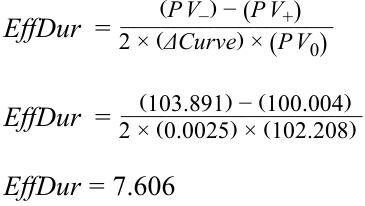
- Calculate the effective convexity of a bond given the following: ■ PV 0 = 102.208. ■ Price with the benchmark yield curve shifted up 25 bps: PV + = 100.004.
- Tính độ lồi hiệu dụng của một trái phiếu khi biết các thông tin sau: - $PV_0 = 102.208$. - Giá khi đường cong lợi suất chuẩn dịch chuyển lên 25 bps: $PV_+ = 100.004$. - Giá khi đường cong lợi suất chuẩn dịch chuyển xuống 25 bps: $PV_- = 103.891$.
■ Price with the benchmark yield curve shifted down by 25 bps: PV – = 103.891.
Solution: ___[( _P V −) + ( P V +)] − [2 × ( P V 0)]
Lời giải:
EffCon =( ΔCurve)2 × ( P V 0)
- Nếu đường cong lợi suất chuẩn dịch chuyển tăng 50 bps, phần trăm thay đổi trong giá toàn phần của một trái phiếu sẽ là bao nhiêu nếu thời lượng hiệu dụng của nó là 6.094 và độ lồi hiệu dụng của nó là $-230.097$?
Lời giải:
EffCon =[(103.891) + (100.004)] − [2 × (102.208)]( 0.0025)2 ×( 102.208)
EffCon = −815.592
(Lưu ý: Bản gốc hiển thị 3.33% đại diện cho mức giảm giá 3.33%)
- If the benchmark yield curve shifted by 50 bps, what would be the percentage change in the full price of a bond if its effective duration is 6.094 and its effective convexity is –230.097? Solution: % ΔP VFull ≈ (− EffDur × ΔCurve ) + [ 21×_EffCon× (ΔCurve)2] % ΔP VFull ≈( − 6.094 × 0.005) + [1 2× − 230.097 × (0.005)2] %Δ _PV_Ful_l ≈ 3.33%
- Bảng dưới đây chứa các dự báo về những thay đổi kỳ vọng trong đường cong lợi suất chuẩn theo kỳ hạn (tenor).
| 5. The table below contains yield curve by tenor. |
h forecasts of | h expected cha | h nges in the | h benchmark |
|---|---|---|---|---|
| Maturity 1 year |
5 years | 10 years | 20 years | 30 years |
| Curve shift at maturity +100 bps |
+150 bps | +200 bps | +250 bps | +300 bps |
| Kỳ hạn (Maturity) | 1 năm (1 year) | 5 năm (5 years) | 10 năm (10 years) | 20 năm (20 years) | 30 năm (30 years) |
|---|---|---|---|---|---|
| Mức dịch chuyển đường cong tại kỳ hạn (Curve shift at maturity) | +100 bps | +150 bps | +200 bps | +250 bps | +300 bps |
Your portfolio contains equally sized positions in Bond A and Bond B, which have the following key rate durations.
Danh mục đầu tư của bạn chứa các vị thế có quy mô bằng nhau ở Trái phiếu A và Trái phiếu B, có các thời lượng lãi suất chủ chốt như sau.
| Tenor | Key Rate Duration | |
|---|---|---|
| Bond A | 5 years | 1.706 |
| Bond B | 10 years | 3.195 |
| Trái phiếu | Kỳ hạn (Tenor) | Thời lượng Lãi suất Chủ chốt (Key Rate Duration) |
|---|---|---|
| Trái phiếu A | 5 năm | 1.706 |
| Trái phiếu B | 10 năm | 3.195 |
Given the information and expected changes in yields, identify the bond that could be sold to improve returns.
Với thông tin đã cho và những thay đổi kỳ vọng trong lợi suất, hãy xác định trái phiếu nào có thể được bán đi để cải thiện tỷ suất sinh lợi.
Solution:
Lời giải:
Bond B, because its expected price decline from the expected change in benchmark yields is more than twice that of Bond A.
Trái phiếu B, bởi vì mức giảm giá kỳ vọng của nó từ sự thay đổi kỳ vọng trong lợi suất chuẩn cao gấp hơn hai lần so với Trái phiếu A.
For Bond A, ∆ PV / PV = –1.706 × 0.015 = –2.56%.
Đối với Trái phiếu A, $\Delta PV / PV = -1.706 \times 0.015 = -2.56\%$.
For Bond B, ∆ PV / PV = –3.195 × 0.020 = –6.39%.
Đối với Trái phiếu B, $\Delta PV / PV = -3.195 \times 0.020 = -6.39\%$.
- Explain why yield duration and convexity are less useful for bonds with contingency features, such as callable bonds.
- Giải thích tại sao thời lượng và độ lồi lợi suất lại kém hữu ích hơn đối với các trái phiếu có điều khoản dự phòng (contingency features), chẳng hạn như trái phiếu có thể mua lại (callable bonds).
Solution:
Lời giải:
Yield duration and convexity assume cash flows are received on scheduled dates. Cash flows from bonds with contingency features may not be received on scheduled dates—if, for example, a callable bond is called by the issuer following a decrease in interest rates. Therefore, yield duration and convexity would not correctly measure the price sensitivity to interest rates.
Thời lượng và độ lồi lợi suất giả định rằng các dòng tiền được nhận vào những ngày đã lên lịch. Các dòng tiền từ những trái phiếu có điều khoản dự phòng có thể không được nhận vào những ngày đã lên lịch—ví dụ, nếu một trái phiếu có thể mua lại bị tổ chức phát hành mua lại sau khi lãi suất giảm. Do đó, thời lượng và độ lồi lợi suất sẽ không đo lường chính xác độ nhạy của giá đối với lãi suất.
- When comparing analytical duration versus empirical duration, which of the following statements is correct?
-
A. Analytical duration and convexity are estimated duration and convexity statistics using mathematical formulas.
-
B. Empirical duration and convexity are estimated using historical data in non-statistical models that incorporate various factors affecting bond prices.
-
C. Both A and B
- Khi so sánh thời lượng giải tích (analytical duration) với thời lượng thực nghiệm (empirical duration), phát biểu nào sau đây là đúng?
-
A. Thời lượng và độ lồi giải tích là các số liệu thống kê thời lượng và độ lồi được ước tính bằng cách sử dụng các công thức toán học.
-
B. Thời lượng và độ lồi thực nghiệm được ước tính bằng cách sử dụng dữ liệu lịch sử trong các mô hình phi thống kê (non-statistical models) kết hợp nhiều yếu tố khác nhau ảnh hưởng đến giá trái phiếu.
-
C. Cả A và B
Solution:
Lời giải:
A is correct. Analytical duration and convexity are estimated duration and convexity statistics using mathematical formulas.
A là đáp án đúng. Thời lượng và độ lồi giải tích là các số liệu thống kê thời lượng và độ lồi được ước tính bằng cách sử dụng các công thức toán học.
B is incorrect because statistical models are primarily used to determine empirical duration and convexity.
B không đúng vì các mô hình thống kê (statistical models) chủ yếu được sử dụng để xác định thời lượng và độ lồi thực nghiệm.
C is incorrect because B is incorrect.
C không đúng vì B không đúng.
- True or false: Analytical duration is superior to empirical duration for bonds with credit risk.
- Đúng hay sai: Thời lượng giải tích ưu việt hơn thời lượng thực nghiệm đối với các trái phiếu có rủi ro tín dụng (credit risk).
Solution:
Lời giải:
False. If government bond yields are driven lower in a market stress scenario, the “flight to safety” will also cause credit spreads to widen because of an increase in expected default risk. Since credit spreads and benchmark yields are negatively correlated under this scenario, wider credit spreads will partially or fully offset the decline in government benchmark yields, resulting in lower empirical duration estimates than analytical duration estimates. Therefore, empirical duration estimates are a more accurate method of forecasting bond price changes for bonds with credit risk.
Sai (False). Nếu lợi suất trái phiếu chính phủ bị đẩy xuống thấp hơn trong một kịch bản thị trường căng thẳng, “xu hướng tìm nơi trú ẩn an toàn” (flight to safety) cũng sẽ khiến chênh lệch tín dụng (credit spreads) nới rộng ra do sự gia tăng rủi ro vỡ nợ kỳ vọng. Vì chênh lệch tín dụng và lợi suất chuẩn có tương quan nghịch trong kịch bản này, chênh lệch tín dụng rộng hơn sẽ bù trừ một phần hoặc toàn bộ cho sự sụt giảm trong lợi suất chuẩn của chính phủ, dẫn đến ước tính thời lượng thực nghiệm thấp hơn ước tính thời lượng giải tích. Do đó, các ước tính thời lượng thực nghiệm là phương pháp dự báo thay đổi giá trái phiếu chính xác hơn đối với các trái phiếu có rủi ro tín dụng.
CURVE-BASED INTEREST RATE RISK MEASURES
CÁC THƯỚC ĐO RỦI RO LÃI SUẤT DỰA TRÊN ĐƯỜNG CONG LỢI SUẤT (CURVE-BASED INTEREST RATE RISK MEASURES)
2
2
explain why effective duration and effective convexity are the most appropriate measures of interest rate risk for bonds with embedded options
- giải thích tại sao thời lượng hiệu dụng (effective duration) và độ lồi hiệu dụng (effective convexity) là những thước đo rủi ro lãi suất thích hợp nhất đối với các trái phiếu có quyền chọn đi kèm (bonds with embedded options)
Yield duration and convexity assume a bond’s cash flows are certain. However, if a bond has contingency features, such as embedded options, as with a callable (or puttable) bond, then future cash flows are uncertain since option exercise depends on the level of market interest rates relative to coupon interest being paid (or received). For example, the duration of a callable bond does not reflect the sensitivity of the bond price to a change in the yield-to-worst, since this represents only one of several possible outcomes based on future interest rates.
Thời lượng và độ lồi lợi suất giả định rằng các dòng tiền của trái phiếu là chắc chắn. Tuy nhiên, nếu một trái phiếu có các điều khoản dự phòng, chẳng hạn như các quyền chọn đi kèm (embedded options), như đối với trái phiếu có thể mua lại (callable bond) (hoặc có thể bán lại – putable bond), thì các dòng tiền trong tương lai là không chắc chắn vì việc thực hiện quyền chọn phụ thuộc vào mức lãi suất thị trường so với lãi suất coupon đang được thanh toán (hoặc nhận được). Ví dụ, thời lượng của một trái phiếu có thể mua lại không phản ánh độ nhạy của giá trái phiếu đối với sự thay đổi trong lợi suất thấp nhất có thể (yield-to-worst), vì điều này chỉ đại diện cho một trong nhiều kết quả có thể xảy ra dựa trên lãi suất trong tương lai.
Consequently, bonds with embedded options do not have well-defined yields-to-maturity, so Macaulay and modified durations are not appropriate interest rate risk measures for such bonds. Rather, the appropriate measure of interest rate risk is the sensitivity of the bond’s price to a change in a benchmark yield curve —for example, the government par curve—known as effective duration , a curve duration rather than a yield duration statistic.
Do đó, các trái phiếu có quyền chọn đi kèm không có lợi suất đáo hạn được xác định rõ ràng, nên thời lượng Macaulay và thời lượng điều chỉnh không phải là các thước đo rủi ro lãi suất thích hợp cho những trái phiếu như vậy. Thay vào đó, thước đo rủi ro lãi suất thích hợp là độ nhạy của giá trái phiếu đối với một sự thay đổi trong đường cong lợi suất chuẩn (benchmark yield curve)—ví dụ, đường cong lợi suất ngang giá của chính phủ (government par curve)—được gọi là thời lượng hiệu dụng (effective duration), một số liệu thống kê thời lượng đường cong (curve duration) thay vì thời lượng lợi suất (yield duration).
Exhibit 1 shows the impact of an instantaneous change in the benchmark yield curve (Δ Curve ) on the price of a callable bond compared with that on a comparable non-callable bond. The two bonds have the same features (i.e., coupon rate, payment frequency, time-to-maturity, and credit risk). Note that the horizontal axis is a benchmark yield—a point on the par curve for government bonds.
Bảng 1 cho thấy tác động của một sự thay đổi tức thời trong đường cong lợi suất chuẩn ($\Delta \text{Curve}$) lên giá của một trái phiếu có thể mua lại so với tác động lên một trái phiếu không thể mua lại tương đương. Hai trái phiếu có cùng các đặc điểm (tức là lãi suất coupon, tần suất thanh toán, thời gian đáo hạn và rủi ro tín dụng). Lưu ý rằng trục hoành là lợi suất chuẩn—một điểm trên đường cong ngang giá đối với trái phiếu chính phủ.
Exhibit 1: Interest Rate Risk Characteristics of a Callable Bond
Bảng 1: Các Đặc tính Rủi ro Lãi suất của một Trái phiếu Có thể Mua lại (Exhibit 1: Interest Rate Risk Characteristics of a Callable Bond)
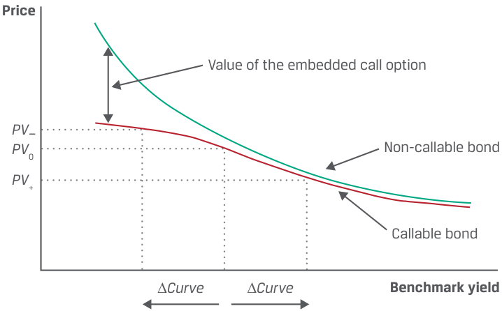
Chú thích hình ảnh: - Trục tung: Giá (Price) với các mức giá $PV_-$, $PV_0$, $PV_+$. - Trục hoành: Lợi suất chuẩn (Benchmark yield) với hai khoảng dịch chuyển $\Delta \text{Curve}$. - Các đường biểu diễn: Trái phiếu không thể mua lại (Non-callable bond – nằm phía trên) và Trái phiếu có thể mua lại (Callable bond – nằm phía dưới, bị uốn cong xuống khi lợi suất giảm thấp); khoảng cách giữa hai đường là Giá trị của quyền chọn mua đi kèm (Value of the embedded call option).
The price of the non-callable bond is always greater than that of the comparable callable bond. The difference is the value of the embedded call option, which is held by the bond issuer (not the investor). When interest rates are high relative to the coupon rate, the value of the call option is low. When rates are low, the value of the call option is high since the issuer is more likely to exercise the option to refinance the debt at the lower prevailing rates. The investor bears the “call risk” since if the bond is called, the investor must reinvest the proceeds at a lower interest rate.
Giá của trái phiếu không thể mua lại luôn lớn hơn giá của trái phiếu có thể mua lại tương đương. Khoảng chênh lệch chính là giá trị của quyền chọn mua đi kèm (embedded call option), được nắm giữ bởi tổ chức phát hành trái phiếu (chứ không phải nhà đầu tư). Khi lãi suất cao so với lãi suất coupon, giá trị của quyền chọn mua thấp. Khi lãi suất thấp, giá trị của quyền chọn mua cao vì tổ chức phát hành có nhiều khả năng thực hiện quyền chọn để tái tài trợ khoản nợ ở mức lãi suất hiện hành thấp hơn. Nhà đầu tư gánh chịu “rủi ro bị mua lại” (call risk) vì nếu trái phiếu bị mua lại, nhà đầu tư phải tái đầu tư số tiền thu được ở mức lãi suất thấp hơn.
Exhibit 1 shows that, given parallel shifts in the benchmark yield curve, when benchmark yields are high (Δ Curve is positive), the effective durations of the callable and non-callable bonds are very similar. But when interest rates are low (Δ Curve is negative), the effective duration of the callable bond is lower than that of the otherwise comparable non-callable bond, since the callable bond price does not increase as much when benchmark yields fall; the presence of the call option limits price appreciation. Thus, an embedded call option reduces the effective duration of the bond, especially when interest rates are falling and the bond is more likely to be called. The lower effective duration can be interpreted as a shorter expected life—a reduced weighted average of time to receipt of cash flow.
Bảng 1 cho thấy rằng, với những dịch chuyển song song trong đường cong lợi suất chuẩn, khi lợi suất chuẩn ở mức cao ($\Delta \text{Curve}$ dương), thời lượng hiệu dụng của trái phiếu có thể mua lại và không thể mua lại là rất giống nhau. Nhưng khi lãi suất ở mức thấp ($\Delta \text{Curve}$ âm), thời lượng hiệu dụng của trái phiếu có thể mua lại thấp hơn so với trái phiếu không thể mua lại có các đặc điểm khác tương đương, vì giá trái phiếu có thể mua lại không tăng nhiều khi lợi suất chuẩn giảm; sự hiện diện của quyền chọn mua giới hạn mức tăng giá (price appreciation). Như vậy, quyền chọn mua đi kèm làm giảm thời lượng hiệu dụng của trái phiếu, đặc biệt là khi lãi suất đang giảm và trái phiếu có nhiều khả năng bị mua lại hơn. Thời lượng hiệu dụng thấp hơn có thể được diễn giải là vòng đời kỳ vọng ngắn hơn—mức trung bình có trọng số của thời gian nhận dòng tiền bị giảm xuống.
Analogous to effective duration, the second-order effect of a parallel shift in the benchmark yield curve is measured by effective convexity , a curve convexity statistic. In Exhibit 1, as the benchmark yield declines, the slope of the line tangent to the curve for the non-callable bond steepens, indicating positive convexity. But the slope of the line tangent to the callable bond flattens as the benchmark yield declines and reaches an inflection point, after which the effective convexity becomes negative.
Tương tự như thời lượng hiệu dụng, tác động bậc hai của một sự dịch chuyển song song trong đường cong lợi suất chuẩn được đo lường bằng độ lồi hiệu dụng (effective convexity), một số liệu thống kê độ lồi đường cong (curve convexity). Trong Bảng 1, khi lợi suất chuẩn giảm, độ dốc của đường tiếp tuyến với đường cong của trái phiếu không thể mua lại trở nên dốc hơn, cho thấy độ lồi dương (positive convexity). Nhưng độ dốc của đường tiếp tuyến với trái phiếu có thể mua lại trở nên phẳng hơn khi lợi suất chuẩn giảm và đạt đến một điểm uốn (inflection point), sau điểm đó độ lồi hiệu dụng trở nên âm (negative convexity).
When the benchmark yield is high and the value of the embedded call option is low, the callable and the non-callable bonds experience very similar effects from interest rate changes and both have positive convexity. But as the benchmark yield declines, the curves diverge, and at some point, the callable bond moves into the range of negative convexity, since the embedded call option has more value to the issuer and is more likely to be exercised. This situation further limits the potential price appreciation of the bond arising from lower benchmark yields.
Khi lợi suất chuẩn cao và giá trị của quyền chọn mua đi kèm thấp, trái phiếu có thể mua lại và trái phiếu không thể mua lại chịu những tác động rất giống nhau từ sự thay đổi lãi suất và cả hai đều có độ lồi dương. Nhưng khi lợi suất chuẩn giảm xuống, hai đường cong phân kỳ, và tại một điểm nào đó, trái phiếu có thể mua lại đi vào vùng có độ lồi âm, vì quyền chọn mua đi kèm có nhiều giá trị hơn đối với tổ chức phát hành và có nhiều khả năng được thực hiện hơn. Tình huống này càng giới hạn thêm tiềm năng tăng giá của trái phiếu phát sinh từ mức lợi suất chuẩn thấp hơn.
Exhibit 2 shows characteristics of a bond with an embedded put option.
Bảng 2 cho thấy các đặc điểm của một trái phiếu có quyền chọn bán đi kèm (embedded put option).
Exhibit 2: Interest Rate Risk Characteristics of a Putable Bond
Bảng 2: Các Đặc tính Rủi ro Lãi suất của một Trái phiếu Có thể Bán lại (Exhibit 2: Interest Rate Risk Characteristics of a Putable Bond)
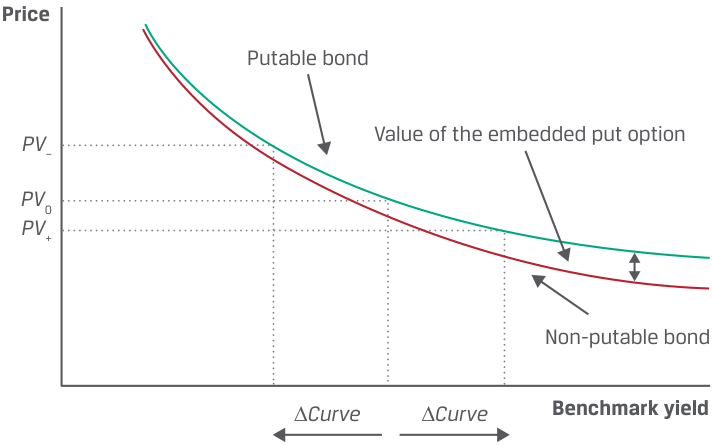
Chú thích hình ảnh: - Trục tung: Giá (Price) với các mức giá $PV_-$, $PV_0$, $PV_+$. - Trục hoành: Lợi suất chuẩn (Benchmark yield) với hai khoảng dịch chuyển $\Delta \text{Curve}$. - Các đường biểu diễn: Trái phiếu có thể bán lại (Putable bond – nằm phía trên, có sàn giá khi lợi suất tăng cao) và Trái phiếu không thể bán lại (Non-putable bond – nằm phía dưới); khoảng cách giữa hai đường khi lợi suất cao là Giá trị của quyền chọn bán đi kèm (Value of the embedded put option).
A putable bond allows the investor to sell the bond back to the issuer before maturity, usually at par value, protecting the investor from higher benchmark yields that would otherwise drive the bond’s price below par. So, the price of a putable bond is always higher than that of an otherwise comparable non-putable bond, the price difference being the value of the embedded put option.
Trái phiếu có thể bán lại (putable bond) cho phép nhà đầu tư bán lại trái phiếu cho tổ chức phát hành trước khi đáo hạn, thường là ở mức mệnh giá, bảo vệ nhà đầu tư khỏi mức lợi suất chuẩn cao hơn mà nếu không có quyền chọn này sẽ đẩy giá trái phiếu xuống dưới mệnh giá. Vì vậy, giá của một trái phiếu có thể bán lại luôn cao hơn giá của một trái phiếu không thể bán lại có các đặc điểm khác tương đương, phần chênh lệch giá chính là giá trị của quyền chọn bán đi kèm.
An embedded put option reduces the effective duration of the bond, especially when rates are rising. Given a parallel shift in the benchmark yield curve, if interest rates are low compared to the coupon rate, the value of the put option is low and the impact of a change in the benchmark yield on the bond’s price is very similar to that for a non-putable bond. But when benchmark interest rates rise, the put option
Quyền chọn bán đi kèm làm giảm thời lượng hiệu dụng của trái phiếu, đặc biệt là khi lãi suất đang tăng. Với sự dịch chuyển song song trong đường cong lợi suất chuẩn, nếu lãi suất thấp so với lãi suất coupon, giá trị của quyền chọn bán sẽ thấp và tác động của sự thay đổi trong lợi suất chuẩn lên giá trái phiếu rất giống với trái phiếu không thể bán lại. Nhưng khi lãi suất chuẩn tăng lên, quyền chọn bán
becomes more valuable to the investor, since the ability to sell the bond back to the issuer at par limits the price depreciation as rates rise. Importantly, putable bonds always have positive effective convexity.
trở nên có giá trị hơn đối với nhà đầu tư, vì khả năng bán lại trái phiếu cho tổ chức phát hành ở mức mệnh giá giúp giới hạn mức giảm giá khi lãi suất tăng. Điều quan trọng là trái phiếu có thể bán lại luôn có độ lồi hiệu dụng dương.
Effective duration and effective convexity are also relevant for mortgage-backed securities (MBSs), which arise from a residential (or commercial) loan portfolio securitization and are covered in later lessons. MBS cash flows are contingent on homeowners’ ability to refinance or pay off an existing mortgage with the proceeds from a new mortgage. Refinancing is a common feature of mortgages in the United States and some other jurisdictions that borrowers tend to exercise if interest rates fall.
Thời lượng hiệu dụng và độ lồi hiệu dụng cũng rất phù hợp đối với chứng khoán đảm bảo bằng thế chấp (mortgage-backed securities – MBSs), phát sinh từ việc chứng khoán hóa danh mục cho vay mua nhà ở (hoặc bất động sản thương mại) và sẽ được trình bày trong các bài học sau. Các dòng tiền của MBS phụ thuộc vào khả năng tái cấp vốn (refinance) hoặc trả hết khoản vay thế chấp hiện có của người sở hữu nhà bằng số tiền thu được từ một khoản thế chấp mới. Tái cấp vốn là một tính năng phổ biến của các khoản thế chấp tại Hoa Kỳ và một số khu vực pháp lý khác mà người đi vay có xu hướng thực hiện nếu lãi suất giảm.
Calculating effective duration ( EffDur ) is very similar to calculating approximate modified duration, as shown in Equation 1.
Cách tính thời lượng hiệu dụng ($\text{EffDur}$) rất giống với cách tính thời lượng điều chỉnh xấp xỉ, như được thể hiện trong Phương trình 1.
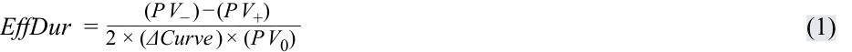
The formula for calculating effective convexity ( EffCon ) is also very similar to the formula for approximate convexity, as shown in Equation 2.
Công thức tính độ lồi hiệu dụng ($\text{EffCon}$) cũng rất giống với công thức tính độ lồi xấp xỉ, như được thể hiện trong Phương trình 2.
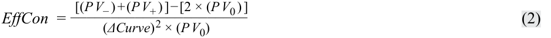
The differences are that Δ Curve is in the denominator—since effective duration is a curve duration statistic, it measures interest rate risk in terms of a parallel shift in the benchmark yield curve—and that PV – and PV + are calculated using option pricing models. These models are covered in more detail in later modules but include such inputs as (1) the length of the call protection period, (2) the schedule of call prices and call dates, (3) an assumption about credit spreads over benchmark yields (which also includes any liquidity spread), (4) an assumption about future interest rate volatility, and (5) the level of market interest rates (e.g., the government par curve). The analyst holds the first four inputs constant and then raises and lowers the fifth input (i.e., parallel shifts) to derive PV + and PV –, respectively.
Điểm khác biệt là $\Delta \text{Curve}$ nằm ở mẫu số—vì thời lượng hiệu dụng là một số liệu thống kê thời lượng đường cong, nó đo lường rủi ro lãi suất theo sự dịch chuyển song song trong đường cong lợi suất chuẩn—và $PV_-$ cùng $PV_+$ được tính bằng cách sử dụng các mô hình định giá quyền chọn (option pricing models). Các mô hình này được trình bày chi tiết hơn trong các học phần sau nhưng bao gồm các thông số đầu vào như (1) độ dài của thời gian bảo vệ khỏi việc bị mua lại (call protection period), (2) lịch trình giá mua lại và ngày mua lại, (3) giả định về chênh lệch tín dụng so với lợi suất chuẩn (cũng bao gồm bất kỳ mức chênh lệch thanh khoản nào), (4) giả định về biến động lãi suất trong tương lai (interest rate volatility), và (5) mức lãi suất thị trường (ví dụ: đường cong ngang giá của chính phủ). Chuyên viên phân tích giữ nguyên bốn thông số đầu vào đầu tiên rồi tăng và giảm thông số đầu vào thứ năm (tức là dịch chuyển song song) để suy ra $PV_+$ và $PV_-$ tương ứng.
Although effective duration and effective convexity are the appropriate interest rate risk measure for bonds with embedded options, they may also be useful with option-free bonds to supplement yield duration. Importantly, small differences may arise between a bond’s effective duration and its modified duration because when the government par curve is shifted in the model, the government spot (i.e., zero) curve is also shifted, but not in the same parallel manner. Thus, the change in the bond price is not the same as it would be if its yield-to-maturity changed by the same amount as the change in the par curve.
Mặc dù thời lượng hiệu dụng và độ lồi hiệu dụng là thước đo rủi ro lãi suất thích hợp đối với các trái phiếu có quyền chọn đi kèm, chúng cũng có thể hữu ích đối với các trái phiếu không kèm quyền chọn nhằm bổ sung cho thời lượng lợi suất. Điều quan trọng là có thể phát sinh những khác biệt nhỏ giữa thời lượng hiệu dụng và thời lượng điều chỉnh của một trái phiếu bởi vì khi đường cong ngang giá của chính phủ được dịch chuyển trong mô hình, đường cong lãi suất giao ngay (spot/zero curve) của chính phủ cũng dịch chuyển theo, nhưng không theo cùng một cách thức song song như vậy. Do đó, mức thay đổi trong giá trái phiếu không giống như khi lợi suất đáo hạn của chính nó thay đổi cùng một lượng bằng với mức thay đổi trong đường cong ngang giá.
In general, modified duration and effective duration on an option-free bond are not identical. However, the difference narrows when the yield curve is flatter, the time-to-maturity is shorter, and the bond is priced closer to par value; the difference disappears only in the rare circumstance of a flat yield curve.
Nhìn chung, thời lượng điều chỉnh và thời lượng hiệu dụng của một trái phiếu không kèm quyền chọn không hoàn toàn giống hệt nhau. Tuy nhiên, sự khác biệt thu hẹp lại khi đường cong lợi suất phẳng hơn, thời gian đáo hạn ngắn hơn và trái phiếu được định giá gần với mệnh giá hơn; sự khác biệt chỉ biến mất trong trường hợp hiếm hoi khi đường cong lợi suất hoàn toàn phẳng.
For example, consider BRWA’s five-year, 3.2% (semiannual) coupon bond priced at par for settlement on 15 October 2025 and maturity on 15 October 2030. Using PV 0 = 100.00 and ∆ Yield = 0.0005, in an earlier lesson, we found
Ví dụ, hãy xét trái phiếu trả coupon 3.2% (bán niên), kỳ hạn 5 năm của BRWA được định giá ngang mệnh giá để thanh toán vào ngày 15 tháng 10 năm 2025 và đáo hạn vào ngày 15 tháng 10 năm 2030. Sử dụng $PV_0 = 100.00$ và $\Delta \text{Yield} = 0.0005$, trong một bài học trước, chúng ta đã tìm ra
PV + = 99.771 and PV – = 100.230,
resulting in yield duration and convexity statistics as follows:
dẫn đến các số liệu thống kê thời lượng và độ lồi lợi suất như sau:
ApproxModDur = 4.587 and ApproxCon = 24.239.
Instead of a change in the bond’s yield-to-maturity, assume there is an upward and downward shift of the benchmark government par curve (∆ Curve ) by 5 bps, which causes spot rates to move in a slightly non-parallel manner. Using PV 0 = 100.00 and ∆ Curve = 0.0005 and assuming the following new prices,
Thay vì một sự thay đổi trong lợi suất đáo hạn của trái phiếu, hãy giả sử có một sự dịch chuyển lên và xuống của đường cong ngang giá chuẩn của chính phủ ($\Delta \text{Curve}$) ở mức 5 bps, khiến lãi suất giao ngay biến động theo cách thức hơi không song song một chút. Sử dụng $PV_0 = 100.00$ và $\Delta \text{Curve} = 0.0005$ đồng thời giả định các mức giá mới sau đây,
PV + = 99.760 and PV – = 100.241,
then using Equation 1, effective duration is 4.816:
khi đó sử dụng Phương trình 1, thời lượng hiệu dụng là 4.816:
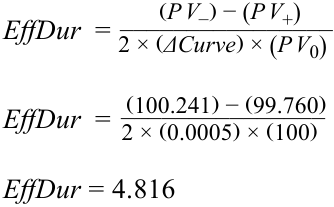
Using the same inputs in Equation 2, effective convexity is 40.000:
Sử dụng cùng các thông số đầu vào trong Phương trình 2, độ lồi hiệu dụng là 40.000:
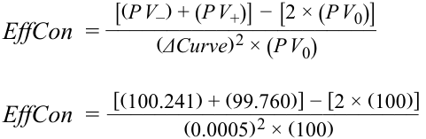
EffCon = 40.000
EXAMPLE 1
VÍ DỤ 1 (EXAMPLE 1)
Effective Duration and Convexity
Thời lượng và Độ lồi Hiệu dụng (Effective Duration and Convexity)
The portfolio manager asks you, the analyst on a fixed-income team, to determine the interest rate sensitivity of a callable bond she is considering. The portfolio manager is seeking to invest in a bond with a duration between 7.0 and 8.0 and positive convexity.
Nhà quản lý danh mục đầu tư yêu cầu bạn, chuyên viên phân tích trong nhóm thu nhập cố định, xác định độ nhạy lãi suất của một trái phiếu có thể mua lại mà cô đang cân nhắc. Nhà quản lý danh mục đầu tư đang tìm cách đầu tư vào một trái phiếu có thời lượng từ 7.0 đến 8.0 và có độ lồi dương.
Suppose the full price of the callable bond is 101.060 per 100 of par value. When the government par curve is raised and lowered by 25 bps, the new full prices for this callable bond from your option valuation model are 99.050 and 102.891, respectively. Therefore,
Giả sử giá toàn phần của trái phiếu có thể mua lại là 101.060 trên mỗi 100 mệnh giá. Khi đường cong ngang giá của chính phủ được nâng lên và hạ xuống 25 bps, các mức giá toàn phần mới cho trái phiếu có thể mua lại này từ mô hình định giá quyền chọn của bạn lần lượt là 99.050 và 102.891. Do đó,
-
PV 0 = 101.060,
-
PV + = 99.050,
-
PV – = 102.891, and
-
Δ Curve = 0.0025.
-
$PV_0 = 101.060$,
-
$PV_+ = 99.050$,
-
$PV_- = 102.891$, và
-
$\Delta \text{Curve} = 0.0025$.
You determine effective duration and effective convexity for this callable bond as follows: __( P V_ −) − ( P V +) EffDur = 2 ×( ΔCurve) × ( P V 0). ___ EffDur = 2 ×(102.891( 0.0025)) − ×((99.050 101.060)). EffDur = 7.601. EffCon = ___[( P V −) + ( P V +) − 2 × ( P V 0)].( ΔCurve)2 × ( P V 0) EffCon = ____[(102.891) + (99.050)] − [2 × (101.060)] .( 0.0025)2 ×( 101.060) _EffCon = −283.
Bạn xác định thời lượng hiệu dụng và độ lồi hiệu dụng cho trái phiếu có thể mua lại này như sau:
You recommend that the portfolio manager not buy this callable bond. While its effective duration meets her criteria, the bond has negative effective convexity.
Bạn khuyến nghị nhà quản lý danh mục đầu tư không mua trái phiếu có thể mua lại này. Mặc dù thời lượng hiệu dụng của nó đáp ứng tiêu chí của cô ấy, nhưng trái phiếu lại có độ lồi hiệu dụng âm.
QUESTION SET
BỘ CÂU HỎI (QUESTION SET)
1. Match each scenario to the interest rate risk measures below.
1. Hãy ghép mỗi kịch bản với các thước đo rủi ro lãi suất dưới đây.
| Scenario | Interest rate risk measure |
|---|---|
| A. Bond’s percentage price change given a change in its yield-to-maturity |
Money duration |
| B. Linear approximation of the bond’s price change in currency, given a 1% change in yield |
Modified duration |
| C. Callable bond | Effective duration |
| Kịch bản (Scenario) | Thước đo rủi ro lãi suất (Interest rate risk measure) |
|---|---|
| A. Phần trăm thay đổi giá của trái phiếu khi có một sự thay đổi trong lợi suất đáo hạn của nó | Thời lượng tiền tệ (Money duration) |
| B. Phép xấp xỉ tuyến tính về mức thay đổi giá của trái phiếu tính bằng tiền tệ, khi lợi suất thay đổi 1% | Thời lượng điều chỉnh (Modified duration) |
| C. Trái phiếu có thể mua lại (Callable bond) | Thời lượng hiệu dụng (Effective duration) |
Solution:
Lời giải:
The match for A is modified duration. Modified duration is used to estimate the percentage price change given a change in yield-to-maturity. The match for B is money duration. Money duration expresses modified duration in currency units, which can be used to estimate the currency unit change in the position of a bond.
The match for C is effective duration. Callable bonds have uncertain future cash flows with respect to future interest rates. Therefore, a curve duration statistic, such as effective duration, would be best to measure interest rate risk.
Kịch bản A ghép với thời lượng điều chỉnh (modified duration). Thời lượng điều chỉnh được sử dụng để ước tính phần trăm thay đổi giá khi có sự thay đổi trong lợi suất đáo hạn. Kịch bản B ghép với thời lượng tiền tệ (money duration). Thời lượng tiền tệ biểu thị thời lượng điều chỉnh theo đơn vị tiền tệ, có thể được sử dụng để ước tính mức thay đổi tính bằng đơn vị tiền tệ trong vị thế của một trái phiếu.
Questions 2–5 relate to the following information:
Kịch bản C ghép với thời lượng hiệu dụng (effective duration). Trái phiếu có thể mua lại có các dòng tiền tương lai không chắc chắn đối với lãi suất trong tương lai. Do đó, một số liệu thống kê thời lượng đường cong, chẳng hạn như thời lượng hiệu dụng, sẽ là tốt nhất để đo lường rủi ro lãi suất.
As a member of a fixed-income team, you are asked to examine pricing data for a Viviyu Inc. callable bond. The current full price, the price assuming the benchmark yield curve shifts up 25 bps, and the price assuming the benchmark yield curve shifts down by 25 bps, are as follows:
■ PV 0 = 102.208,
Các câu hỏi 2–5 liên quan đến thông tin sau đây:
■ PV + = 100.004, and
Là thành viên của nhóm thu nhập cố định, bạn được yêu cầu kiểm tra dữ liệu định giá cho một trái phiếu có thể mua lại của Viviyu Inc. Giá toàn phần hiện tại, giá giả định đường cong lợi suất chuẩn dịch chuyển lên 25 bps, và giá giả định đường cong lợi suất chuẩn dịch chuyển xuống 25 bps, như sau:
■ PV – = 103.891.
- Calculate the effective duration of the Viviyu Inc. callable bond.
-
$PV_0 = 102.208$,
-
$PV_+ = 100.004$, và
-
$PV_- = 103.891$.
- Tính thời lượng hiệu dụng của trái phiếu có thể mua lại của Viviyu Inc.
Solution:
Lời giải:
____2 ×(( P ΔCurve V −) −) ( × P V (+ P ) V 0).
EffDur =
______ EffDur = 2 ×(103.891( 0.0025) − ) ×(100.004( 102.208)). EffDur = 7.6061.
- In an audit of the data, it was determined that PV + was incorrect and that the correct value of PV + is 100.50426. All other data values were correct.
- Trong một cuộc kiểm toán dữ liệu, người ta xác định rằng $PV_+$ bị sai và giá trị đúng của $PV_+$ là 100.50426. Tất cả các giá trị dữ liệu khác đều đúng.
Explain whether the updated data would increase or decrease the value of effective duration.
Hãy giải thích xem dữ liệu cập nhật sẽ làm tăng hay giảm giá trị của thời lượng hiệu dụng.
Solution:
Lời giải:
There is no need to recalculate the effective duration. Since the updated PV + value is larger than the prior one, with all else constant, the numerator would be lower; thus, effective duration would decrease.
Không cần phải tính lại thời lượng hiệu dụng. Vì giá trị $PV_+$ cập nhật lớn hơn giá trị trước đó, khi tất cả các yếu tố khác không đổi, tử số sẽ nhỏ hơn; do đó, thời lượng hiệu dụng sẽ giảm xuống.
- Calculate the effective convexity of the Viviyu Inc. callable bond using the following:
-
PV 0 = 102.208,
-
PV + = 98.504,
-
PV – = 103.891, and
-
Δ Curve = 0.0025.
- Tính độ lồi hiệu dụng của trái phiếu có thể mua lại của Viviyu Inc. bằng cách sử dụng các thông tin sau:
-
$PV_0 = 102.208$,
-
$PV_+ = 98.504$,
-
$PV_- = 103.891$, và
-
$\Delta \text{Curve} = 0.0025$.
Solution:
Lời giải:
EffCon = ___[( _P V −) + ( P V +)] − [2 × ( P V 0)].( ΔCurve)2 × ( P V 0) EffCon = ____[(103.891) + (98.504)] − [2 × (102.208)] .( 0.0025)2 ×( 102.208) _EffCon = −3,164.
- Trong Câu hỏi 4, độ lồi hiệu dụng mang dấu âm, chứ không phải dương như thời lượng hiệu dụng. Hãy giải thích độ lồi hiệu dụng âm hàm ý điều gì.
- In Question 4, the effective convexity was negative, not positive as it was for the effective duration. Explain what negative effective convexity implies. Solution:
Lời giải:
Negative effective convexity implies that the bond price will decline by a greater amount with an upward shift in benchmark yield than it will increase with a decline in the benchmark yield.
Độ lồi hiệu dụng âm hàm ý rằng giá trái phiếu sẽ giảm một lượng lớn hơn khi đường cong lợi suất chuẩn dịch chuyển đi lên so với mức tăng giá khi lợi suất chuẩn giảm xuống.
3
3
BOND RISK AND RETURN USING CURVE-BASED DURATION AND CONVEXITY
RỦI RO VÀ TỶ SUẤT SINH LỢI CỦA TRÁI PHIẾU SỬ DỤNG THỜI LƯỢNG VÀ ĐỘ LỒI DỰA TRÊN ĐƯỜNG CONG LỢI SUẤT (BOND RISK AND RETURN USING CURVE-BASED DURATION AND CONVEXITY)
calculate the percentage price change of a bond for a specified change in benchmark yield, given the bond’s effective duration and convexity
- tính toán phần trăm thay đổi giá của một trái phiếu đối với một mức thay đổi xác định trong lợi suất chuẩn (benchmark yield), khi biết thời lượng hiệu dụng và độ lồi hiệu dụng của trái phiếu đó
As we have seen, effective duration and effective convexity are curve-based metrics that are useful for gauging the interest rate risk of complex instruments—such as those with embedded contingency provisions—whose future cash flows are uncertain. These metrics are typically determined from bond prices derived using an option valuation model, given specific (parallel) changes in the underlying benchmark government yield curve.
Như chúng ta đã thấy, thời lượng hiệu dụng và độ lồi hiệu dụng là các thước đo dựa trên đường cong lợi suất rất hữu ích để đánh giá rủi ro lãi suất của các công cụ phức tạp—chẳng hạn như những công cụ có các điều khoản dự phòng đi kèm—vốn có các dòng tiền tương lai không chắc chắn. Các thước đo này thường được xác định từ giá trái phiếu suy ra bằng cách sử dụng mô hình định giá quyền chọn, ứng với những thay đổi (song song) cụ thể trong đường cong lợi suất chính phủ chuẩn cơ sở.
Just as with yield-based interest rate risk measures, effective duration and effective convexity can be used to estimate the percentage change in a bond’s full price for a given shift in the benchmark yield curve (∆ Curve ), as shown in Equation 3.
Cũng giống như các thước đo rủi ro lãi suất dựa trên lợi suất, thời lượng hiệu dụng và độ lồi hiệu dụng có thể được sử dụng để ước tính phần trăm thay đổi trong giá toàn phần của một trái phiếu đối với một mức dịch chuyển nhất định trong đường cong lợi suất chuẩn ($\Delta \text{Curve}$), như được thể hiện trong Phương trình 3.
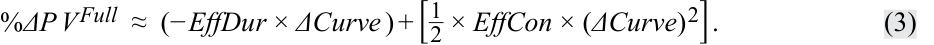
Let’s return to BRWA’s five-year, 3.2% (semiannual) coupon bond priced at par for settlement on 15 October 2025 and maturity on 15 October 2030. Using Equation 3 and previously derived effective duration and effective convexity,
Hãy quay lại với trái phiếu trả coupon 3.2% (bán niên), kỳ hạn 5 năm của BRWA được định giá ngang mệnh giá để thanh toán vào ngày 15 tháng 10 năm 2025 và đáo hạn vào ngày 15 tháng 10 năm 2030. Sử dụng Phương trình 3 cùng với thời lượng hiệu dụng và độ lồi hiệu dụng đã suy ra trước đó,
EffDur = 4.816 and EffCon = 26.723,
the percentage changes in the bond’s full price for ±100 bp shifts in the benchmark government par curve are estimated as follows:
phần trăm thay đổi trong giá toàn phần của trái phiếu đối với các mức dịch chuyển $\pm 100\text{ bp}$ trong đường cong ngang giá chuẩn của chính phủ được ước tính như sau:
%∆ PVFull ≈ (–4.816 × 0.01) + [½ × 26.723 × (0.01)2 ] = –4.68%.
%∆ PVFull ≈ (–4.816 × –0.01) + [½ × 26.723 × (–0.01)2 ] = 4.95%.
These bond price changes compare with the previously derived estimates of –4.47% and 4.71% for this BRWA bond when using ApproxModDur alone and ApproxModDur and ApproxCon , respectively, with yield-to-maturity changes of ±100 bps.
Những mức thay đổi giá trái phiếu này được so sánh với các ước tính đã suy ra trước đó là $-4.47\%$ và $4.71\%$ cho trái phiếu BRWA này khi sử dụng $\text{ApproxModDur}$ và $\text{ApproxCon}$ tương ứng với mức thay đổi lợi suất đáo hạn là $\pm 100\text{ bps}$.
As noted earlier, the differences in results using the curve-based measures versus the yield-based interest rate risk measures are due to slightly different bond prices ( PV + and PV –) and, therefore, EffDur and EffCon metrics (versus ApproxModDur and ApproxCon metrics) since a parallel shift in the government par curve produces a non-parallel shift in spot (zero) rates and one-year forward rates.
Như đã lưu ý trước đó, sự khác biệt trong kết quả khi sử dụng các thước đo dựa trên đường cong lợi suất so với các thước đo rủi ro lãi suất dựa trên lợi suất là do các mức giá trái phiếu ($PV_+$ và $PV_-$) hơi khác nhau một chút và do đó các thước đo $\text{EffDur}$ và $\text{EffCon}$ (so với các thước đo $\text{ApproxModDur}$ và $\text{ApproxCon}$) cũng khác nhau, vì một sự dịch chuyển song song trong đường cong ngang giá của chính phủ tạo ra một sự dịch chuyển không song song trong lãi suất giao ngay (spot/zero rates) và lãi suất kỳ hạn một năm (one-year forward rates).
Curve-based interest rate risk measures are important for both issuers and investors. For example, as noted previously, for a callable bond, when the benchmark curve shifts downward and interest rates are low relative to the bond’s coupon rate, effective duration declines and effective convexity may even turn from positive to negative. From an investor’s perspective, these results severely limit the bond’s price appreciation in a declining interest rate environment. From the issuer’s perspective, the bonds can be bought back at the call price and refinanced at lower market rates.
Các thước đo rủi ro lãi suất dựa trên đường cong lợi suất rất quan trọng đối với cả tổ chức phát hành lẫn nhà đầu tư. Ví dụ, như đã lưu ý trước đó, đối với một trái phiếu có thể mua lại, khi đường cong chuẩn dịch chuyển đi xuống và lãi suất thấp so với lãi suất coupon của trái phiếu, thời lượng hiệu dụng sẽ giảm và độ lồi hiệu dụng thậm chí có thể chuyển từ dương sang âm. Từ góc độ của nhà đầu tư, những kết quả này hạn chế nghiêm trọng khả năng tăng giá của trái phiếu trong môi trường lãi suất giảm. Từ góc độ của tổ chức phát hành, các trái phiếu có thể được mua lại ở mức giá mua lại (call price) và được tái tài trợ ở mức lãi suất thị trường thấp hơn.
As for a putable bond, when the benchmark curve shifts upward and interest rates are high relative to the bond’s coupon rate, both effective duration and effective convexity decline (but effective convexity always remains positive), which, from an investor’s perspective, limits the bond’s price depreciation in a rising interest rate environment. This is because the investor can sell the bonds back to issuer at the put price (typically par), rather than at a discounted price, and reinvest the proceeds at the higher prevailing market rates.
Đối với một trái phiếu có thể bán lại, khi đường cong chuẩn dịch chuyển đi lên và lãi suất cao so với lãi suất coupon của trái phiếu, cả thời lượng hiệu dụng và độ lồi hiệu dụng đều giảm (nhưng độ lồi hiệu dụng luôn duy trì ở mức dương), điều này, từ góc độ của nhà đầu tư, giúp hạn chế mức giảm giá của trái phiếu trong môi trường lãi suất tăng. Điều này là do nhà đầu tư có thể bán lại trái phiếu cho tổ chức phát hành ở mức giá bán lại (put price – thường là ngang mệnh giá), thay vì ở mức giá chiết khấu, và tái đầu tư số tiền thu được ở mức lãi suất thị trường hiện hành cao hơn.
A practical consideration in using effective duration and effective convexity is setting the change in the benchmark yield curve. With approximate modified duration, accuracy is improved by choosing a smaller yield-to-maturity change. The pricing models used for more complex securities, such as callable bonds issued by corporations and asset-backed securities (ABSs), include assumptions about the behavior of corporate issuers or the borrowers whose loans make up the underlying ABS assets under different interest rate scenarios. For example, a corporate issuer’s decision to call a bond and refinance depends in part on issuer-specific credit spreads. For mortgage borrowers, changes in the value of the underlying asset financed will affect the decision to refinance a mortgage and therefore call an MBS bond. Therefore, estimates of interest rate risk using effective duration and effective convexity are not necessarily improved by choosing a smaller change in benchmark rates. Curve-based interest rate risk measures have become an important tool in the financial analysis of not only traditional bonds but also financial liabilities.
Một điểm cần cân nhắc thực tế khi sử dụng thời lượng hiệu dụng và độ lồi hiệu dụng là việc thiết lập mức thay đổi trong đường cong lợi suất chuẩn. Với thời lượng điều chỉnh xấp xỉ, độ chính xác được cải thiện bằng cách chọn một mức thay đổi lợi suất đáo hạn nhỏ hơn. Các mô hình định giá được sử dụng cho các chứng khoán phức tạp hơn, chẳng hạn như trái phiếu có thể mua lại do các doanh nghiệp phát hành và chứng khoán đảm bảo bằng tài sản (asset-backed securities – ABSs), bao gồm các giả định về hành vi của các tổ chức phát hành doanh nghiệp hoặc những người đi vay mà các khoản vay của họ cấu thành nên tài sản ABS cơ sở dưới các kịch bản lãi suất khác nhau. Ví dụ, quyết định mua lại trái phiếu và tái tài trợ của một tổ chức phát hành doanh nghiệp phụ thuộc một phần vào chênh lệch tín dụng đặc thù của tổ chức phát hành đó (issuer-specific credit spreads). Đối với những người vay thế chấp, những thay đổi trong giá trị của tài sản cơ sở được tài trợ sẽ ảnh hưởng đến quyết định tái cấp vốn khoản thế chấp và do đó mua lại trái phiếu MBS. Vì vậy, các ước tính rủi ro lãi suất sử dụng thời lượng hiệu dụng và độ lồi hiệu dụng không nhất thiết được cải thiện bằng cách chọn một mức thay đổi nhỏ hơn trong lãi suất chuẩn. Các thước đo rủi ro lãi suất dựa trên đường cong lợi suất đã trở thành một công cụ quan trọng trong phân tích tài chính không chỉ đối với các trái phiếu truyền thống mà còn đối với các khoản nợ tài chính (financial liabilities).
EXAMPLE 2
VÍ DỤ 2 (EXAMPLE 2)
Using Effective Duration and Convexity to Estimate Bonds’ Price Changes Given Benchmark Rate Changes
Sử dụng Thời lượng và Độ lồi Hiệu dụng để Ước tính Thay đổi Giá Trái phiếu Khi Lãi suất Chuẩn Thay đổi (Using Effective Duration and Convexity to Estimate Bonds’ Price Changes Given Benchmark Rate Changes)
Continuing from Example 1, to bolster your recommendation that the portfolio manager (PM) not buy the callable bond trading at 101.060, you want to demonstrate the price impact of the bond’s negative effective convexity. You assume the benchmark government par curve increases and decreases by 100 bps and use Equation 3, with EffDur and EffCon estimates based on bond prices from your option valuation model, to derive the following results:
Tiếp tục từ Ví dụ 1, để củng cố khuyến nghị của bạn rằng nhà quản lý danh mục đầu tư (PM) không nên mua trái phiếu có thể mua lại đang giao dịch ở mức giá 101.060, bạn muốn chứng minh tác động về giá của độ lồi hiệu dụng âm của trái phiếu. Bạn giả định đường cong ngang giá chuẩn của chính phủ tăng và giảm 100 bps và sử dụng Phương trình 3, với các ước tính $\text{EffDur}$ và $\text{EffCon}$ dựa trên giá trái phiếu từ mô hình định giá quyền chọn của bạn, để suy ra các kết quả sau:
-
%∆ PVFull ≈ (–7.601 × 0.01) + [½ × –285.168 × (0.0100)2 ] = –9.03%.
-
%∆ PVFull ≈ (–7.601 × –0.01) + [½ × –285.168 × (–0.0100)2 ] = 6.17%.
-
$\%\Delta PV^{\text{Full}} \approx (-7.601 \times 0.01) + \left[ \frac{1}{2} \times -285.168 \times (0.0100)^2 \right] = -9.03\%$.
-
$\%\Delta PV^{\text{Full}} \approx (-7.601 \times -0.01) + \left[ \frac{1}{2} \times -285.168 \times (-0.0100)^2 \right] = 6.17\%$.
In discussing these results with the PM, you conclude that the negative effective convexity adds to the bond’s price decline when benchmark rates increase and subtracts from the bond’s price rise when benchmark rates decrease. If the PM’s forecast is an equal probability that the benchmark par curve will increase or decrease, the PM would not invest. However, if the PM’s forecast is that the probability for the benchmark decreasing is greater, such that expected gain is greater than zero, she may decide to invest in the bond.
Khi thảo luận các kết quả này với PM, bạn kết luận rằng độ lồi hiệu dụng âm làm gia tăng mức giảm giá của trái phiếu khi lãi suất chuẩn tăng và làm suy giảm mức tăng giá của trái phiếu khi lãi suất chuẩn giảm. Nếu dự báo của PM là xác suất tăng hoặc giảm của đường cong ngang giá chuẩn ngang nhau, PM sẽ không đầu tư. Tuy nhiên, nếu dự báo của PM là xác suất đường cong chuẩn giảm xuống lớn hơn, sao cho mức lợi nhuận kỳ vọng lớn hơn 0, cô ấy có thể quyết định đầu tư vào trái phiếu này.
QUESTION SET
BỘ CÂU HỎI (QUESTION SET)
Questions 1–5 relate to the following information:
Các câu hỏi 1–5 liên quan đến thông tin sau đây:
As a fixed-income analyst, you are asked to consider the impact of the benchmark government par curve shifting upward by 200 bps on two bonds, as part of an internal stress scenario. From a bond pricing model, the following information on effective duration and effective convexity were obtained.
Là một chuyên viên phân tích thu nhập cố định, bạn được yêu cầu xem xét tác động của việc đường cong ngang giá chuẩn của chính phủ dịch chuyển đi lên 200 bps đối với hai trái phiếu, như một phần của kịch bản kiểm tra sức chịu đựng nội bộ (internal stress scenario). Từ mô hình định giá trái phiếu, thông tin sau đây về thời lượng hiệu dụng và độ lồi hiệu dụng đã được thu thập.
Bond A: Effective duration = 9.369; Effective convexity = –353.752. Bond B: Effective duration = 8.517; Effective convexity = –321.756.
- Trái phiếu A: Thời lượng hiệu dụng $= 9.369$; Độ lồi hiệu dụng $= -353.752$.
- Trái phiếu B: Thời lượng hiệu dụng $= 8.517$; Độ lồi hiệu dụng $= -321.756$.
- Tính phần trăm thay đổi ước tính trong giá toàn phần của Trái phiếu A đối với mức dịch chuyển đường cong 200 bps.
- Calculate the estimated percentage change in the full price of bond A for the 200 bps curve shift.
Lời giải:
Solution:
- Tính phần trăm thay đổi ước tính trong giá toàn phần của Trái phiếu B đối với mức dịch chuyển đường cong 200 bps.
- % ΔP VFull ≈ (− EffDur × ΔCurve ) + [ 21×_EffCon× (ΔCurve)2] . % ΔP VFull ≈( − 9.369 × 0.02) + [1 2× − 353.752 × (0.02)2] . %Δ _PVFull ≈ −25.81%.
- Calculate the estimated percentage change in the full price of Bond B for the 200 bps curve shift. Solution:
- % ΔP VFull ≈ (− EffDur × ΔCurve ) + [ 21×_EffCon× (ΔCurve)2] . % ΔP VFull ≈( − 8.517 × 0.02) + [1 2× − 321.756 × (0.02)2] . %Δ _PVFull ≈ −23.47%.
Lời giải:
| 3. Based on Questions 1 and 2, if both bonds were in a portfolio and a decision to sell one of them had to be made in light of a forecast of sharply rising interest rates, recommend Bond A or Bond B to sell. Justify your answer. Solution: Sell Bond A since it has the more negative percentage change in the full price of the bond. For every 200 bps increase in the benchmark curve, the full price of the bond drops 25.81%. |
|---|
| 4. If you were forecasting the benchmark yield curve to shift downward by 200 basis points, recommend Bond A or Bond B to add to the portfolio in antici- pation of the curve shift. Justify your answer. Solution: Add Bond A, since when you calculate the percentage change in the full price for Bonds A and B, Bond A has the higher positive percentage change. %∆PVFullBond A ≈ (–9.369 × –0.02) + [½ × –353.752 × (–0.0200)2] = 11.66%. %∆PVFullBond B ≈ (–8.517 × –0.02) + [½ × –321.756 × (–0.0200)2] = 10.60%. |
| 5. Explain why the estimated percentage change in the price of the bond from a 200 bps upward shift in the benchmark yield curve is more than twice the estimated percentage change in the price of the bond from a 200 bps down- ward yield curve shift. Solution: Because effective convexity is negative, an upward shift in the yield curve results in a higher absolute price change than a downward shift in the yield curve. For the upward shift, the duration contribution is positive and con- vexity contribution is negative, offsetting each other. |
- Dựa trên Câu hỏi 1 và 2, nếu cả hai trái phiếu đều nằm trong một danh mục đầu tư và phải đưa ra quyết định bán một trong hai trái phiếu trước dự báo lãi suất tăng mạnh, hãy khuyến nghị bán Trái phiếu A hay Trái phiếu B. Hãy giải thích câu trả lời của bạn.
Lời giải:
Bán Trái phiếu A vì nó có phần trăm thay đổi âm lớn hơn trong giá toàn phần của trái phiếu. Cứ mỗi 200 bps tăng lên trong đường cong chuẩn, giá toàn phần của trái phiếu giảm 25.81%.
KEY RATE DURATION AS A MEASURE OF YIELD CURVE RISK
- Nếu bạn đang dự báo đường cong lợi suất chuẩn dịch chuyển đi xuống 200 điểm cơ bản, hãy khuyến nghị bổ sung Trái phiếu A hay Trái phiếu B vào danh mục đầu tư để đón đầu sự dịch chuyển đường cong đó. Hãy giải thích câu trả lời của bạn.
Lời giải:
4
Bổ sung Trái phiếu A, vì khi bạn tính phần trăm thay đổi trong giá toàn phần cho Trái phiếu A và B, Trái phiếu A có phần trăm thay đổi dương cao hơn.
- Giải thích tại sao phần trăm thay đổi ước tính trong giá trái phiếu từ mức dịch chuyển đi lên 200 bps của đường cong lợi suất chuẩn lại lớn hơn gấp đôi so với phần trăm thay đổi ước tính trong giá trái phiếu từ mức dịch chuyển đi xuống 200 bps của đường cong lợi suất.
Lời giải:
define key rate duration and describe its use to measure price sensitivity of fixed-income instruments to benchmark yield curve changes
Bởi vì độ lồi hiệu dụng mang dấu âm, sự dịch chuyển đi lên trong đường cong lợi suất dẫn đến mức thay đổi giá tuyệt đối cao hơn so với sự dịch chuyển đi xuống trong đường cong lợi suất. Đối với sự dịch chuyển đi xuống (lưu ý: bản gốc ghi nhầm là upward shift ở câu giải thích cuối), phần đóng góp của thời lượng là dương và phần đóng góp của độ lồi là âm, triệt tiêu lẫn nhau một phần (trong khi với dịch chuyển đi lên, cả phần đóng góp của thời lượng và độ lồi đều âm nên cộng hưởng làm giá giảm sâu hơn).
THỜI LƯỢNG LÃI SUẤT CHỦ CHỐT NHƯ MỘT THƯỚC ĐO RỦI RO ĐƯỜNG CONG LỢI SUẤT (KEY RATE DURATION AS A MEASURE OF YIELD CURVE RISK)
As we have seen, effective duration measures a bond’s sensitivity to changes in the benchmark yield curve if all yields change by the same amount. Key rate duration provides further insight into a bond’s sensitivity to non - parallel benchmark yield curve changes. Key rate duration (or partial duration) is a measure of a bond’s sensitivity to a change in the benchmark yield at a specific maturity. Such a measure is important to isolate the price responses of bonds to changes in the rates of key maturities on the benchmark yield curve.
4
- định nghĩa thời lượng lãi suất chủ chốt (key rate duration) và mô tả việc sử dụng nó để đo lường độ nhạy giá của các công cụ thu nhập cố định trước những thay đổi của đường cong lợi suất chuẩn
Như chúng ta đã thấy, thời lượng hiệu dụng đo lường độ nhạy của một trái phiếu đối với những thay đổi trong đường cong lợi suất chuẩn nếu tất cả các mức lợi suất đều thay đổi cùng một lượng. Thời lượng lãi suất chủ chốt cung cấp cái nhìn sâu sắc hơn về độ nhạy của trái phiếu đối với những thay đổi không song song (non-parallel) của đường cong lợi suất chuẩn. Thời lượng lãi suất chủ chốt (Key rate duration) (hay thời lượng từng phần – partial duration) là một thước đo độ nhạy của trái phiếu đối với sự thay đổi trong lợi suất chuẩn tại một kỳ hạn cụ thể. Một thước đo như vậy rất quan trọng để tách biệt các phản ứng về giá của trái phiếu đối với những thay đổi trong lãi suất của các kỳ hạn chủ chốt trên đường cong lợi suất chuẩn.
Key rate durations define a security’s price sensitivity over a set of maturities along the yield curve, with the sum of key rate durations being equal to the effective duration, as shown in Equation 4 and Equation 5:
Các thời lượng lãi suất chủ chốt xác định độ nhạy giá của một chứng khoán trên một tập hợp các kỳ hạn dọc theo đường cong lợi suất, với tổng các thời lượng lãi suất chủ chốt bằng với thời lượng hiệu dụng, như được thể hiện trong Phương trình 4 và Phương trình 5:
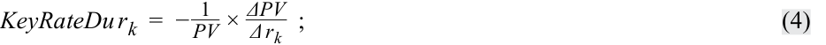
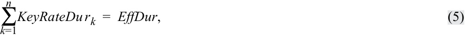
where rk represents the k th key rate. In contrast to effective duration, key rate durations help identify “shaping risk” for a bond—that is, a bond’s sensitivity to changes in the shape of the benchmark yield curve (e.g., the yield curve becoming steeper or flatter or twisting).
trong đó $r_k$ đại diện cho lãi suất chủ chốt thứ $k$. Ngược lại với thời lượng hiệu dụng, các thời lượng lãi suất chủ chốt giúp xác định “rủi ro hình dạng đường cong” (shaping risk) đối với một trái phiếu—nghĩa là, độ nhạy của trái phiếu đối với những thay đổi trong hình dạng của đường cong lợi suất chuẩn (ví dụ: đường cong lợi suất trở nên dốc hơn, phẳng hơn hoặc xoắn lại).
The procedure for the calculation of key rate durations is similar to that used in the calculation of effective duration, but instead of shifting the entire benchmark yield curve, only key points on the curve are shifted, one at a time, as shown in Exhibit 3. The k th key rate, which could be a 0.5-, 2-, 5-, 10-, 20-, or 30-year rate, is shifted up (as shown in Exhibit 3) and down by 1 bp, and then new bond prices are generated ( PV + and PV –) and the key rate duration at that specific maturity is calculated using Equation 4. Thus, the effective duration for each maturity point shift is calculated in isolation.
Quy trình tính toán các thời lượng lãi suất chủ chốt tương tự như quy trình được sử dụng trong tính toán thời lượng hiệu dụng, nhưng thay vì dịch chuyển toàn bộ đường cong lợi suất chuẩn, chỉ những điểm chủ chốt trên đường cong mới được dịch chuyển, từng điểm một tại mỗi thời điểm, như được thể hiện trong Bảng 3. Lãi suất chủ chốt thứ $k$, có thể là lãi suất kỳ hạn 0.5, 2, 5, 10, 20 hoặc 30 năm, được dịch chuyển lên (như trong Bảng 3) và xuống 1 bp, sau đó các mức giá trái phiếu mới được tạo ra ($PV_+$ và $PV_-$) và thời lượng lãi suất chủ chốt tại kỳ hạn cụ thể đó được tính bằng Phương trình 4. Như vậy, thời lượng hiệu dụng cho mỗi sự dịch chuyển điểm kỳ hạn được tính toán một cách biệt lập.
Exhibit 3: Key Rate Shift
Bảng 3: Dịch chuyển Lãi suất Chủ chốt (Exhibit 3: Key Rate Shift)
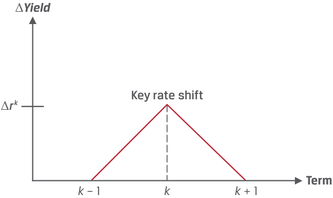
Chú thích hình ảnh: - Trục tung: Thay đổi lợi suất ($\Delta \text{Yield}$) với đỉnh dịch chuyển $\Delta r_k$. - Trục hoành: Kỳ hạn (Term) tại các điểm $k - 1$, $k$, $k + 1$. - Biểu diễn: Dịch chuyển lãi suất chủ chốt (Key rate shift) tạo thành hình tam giác nhọn tại kỳ hạn $k$ và giảm tuyến tính về 0 tại $k - 1$ và $k + 1$.
Exhibit 4 depicts the process of successively shifting the benchmark rate up and down at each of the key maturities along the benchmark yield to generate the key rate duration at maturity.
Bảng 4 mô tả quá trình dịch chuyển liên tiếp lãi suất chuẩn lên và xuống tại mỗi kỳ hạn chủ chốt dọc theo đường cong lợi suất chuẩn để tạo ra thời lượng lãi suất chủ chốt tại kỳ hạn đó.
Exhibit 4: Key Rate Shifts across the Benchmark Yield Curve
Bảng 4: Các Dịch chuyển Lãi suất Chủ chốt Dọc theo Đường cong Lợi suất Chuẩn (Exhibit 4: Key Rate Shifts across the Benchmark Yield Curve)
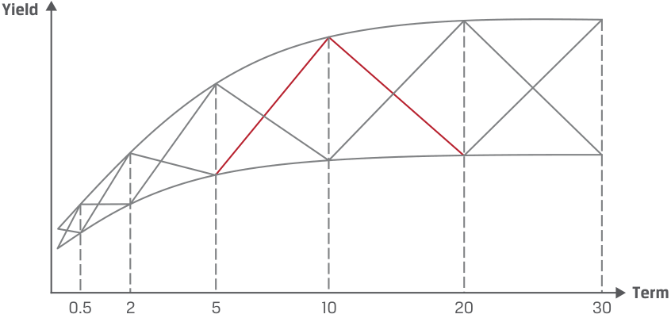
Chú thích hình ảnh: - Trục tung: Lợi suất (Yield). - Trục hoành: Kỳ hạn (Term) tại các mốc 0.5, 2, 5, 10, 20 và 30 năm, thể hiện các dịch chuyển lên/xuống tại từng mốc kỳ hạn chủ chốt dọc theo đường cong lợi suất.
As for practical uses of key rate duration, the analyst may want to know how the price of a callable bond is expected to change if short-term benchmark rates—for example, the rate on the two-year Treasury note, with modified duration of 1.99—rise by 25 bps but longer-maturity benchmark rates remain unchanged. Given that the yield curve is upward sloping, this scenario represents a flattening of the curve.
Về các ứng dụng thực tế của thời lượng lãi suất chủ chốt, chuyên viên phân tích có thể muốn biết giá của một trái phiếu có thể mua lại dự kiến sẽ thay đổi như thế nào nếu lãi suất chuẩn ngắn hạn—ví dụ, lãi suất trái phiếu Kho bạc kỳ hạn 2 năm, với thời lượng điều chỉnh là 1.99—tăng 25 bps nhưng lãi suất chuẩn kỳ hạn dài hơn vẫn không đổi. Với giả định rằng đường cong lợi suất đang dốc lên, kịch bản này thể hiện sự phẳng ra của đường cong (flattening of the curve).
Equation 6 rearranges terms from Equation 4 to solve for ∆ PV / PV (or %∆ PVFull ):
Phương trình 6 sắp xếp lại các số hạng từ Phương trình 4 để giải tìm $\Delta PV / PV$ (hay $\%\Delta PV^{\text{Full}}$):
_ΔPV PV= −KeyRateDurk×Δrk. ~~(6)~~
Using Equation 6, the expected estimated price change would be -0.4975%: ∆ PV / PV = –1.99 × 0.0025.
Sử dụng Phương trình 6, mức thay đổi giá ước tính kỳ vọng sẽ là $-0.4975\%$: $\Delta PV / PV = -1.99 \times 0.0025$.
Now, consider the simple portfolio of government bonds shown in Exhibit 5.
Bây giờ, hãy xét danh mục đầu tư trái phiếu chính phủ đơn giản được thể hiện trong Bảng 5.
Exhibit 5: Simple Government Bond Portfolio
Bảng 5: Danh mục Đầu tư Trái phiếu Chính phủ Đơn giản (Exhibit 5: Simple Government Bond Portfolio)
| Tenor (Years) |
Coupon | Annualized Yield (%) |
Price | Position Size | Modified Duration |
Key Rate Duration |
|---|---|---|---|---|---|---|
| 2 | 0.00 | 0.50 | 99.006 | $99,006,219 | 1.990 | 0.711 |
| 5 | 0.00 | 1.25 | 93.960 | $93,959,580 | 4.938 | 1.675 |
| 10 | 0.00 | 1.75 | 84.010 | $84,009,625 | 9.828 | 2.981 |
| $276,975,424 | 5.368 | 5.368 |
| Kỳ hạn (Năm) (Tenor - Years) | Coupon | Lợi suất Năm hóa (%) (Annualized Yield %) | Giá (Price) | Quy mô Vị thế (Position Size) | Thời lượng Điều chỉnh (Modified Duration) | Thời lượng Lãi suất Chủ chốt (Key Rate Duration) |
|---|---|---|---|---|---|---|
| 2 | 0.00 | 0.50 | 99.006 | $99,006,219 | 1.990 | 0.711 |
| 5 | 0.00 | 1.25 | 93.960 | $93,959,580 | 4.938 | 1.675 |
| 10 | 0.00 | 1.75 | 84.010 | $84,009,625 | 9.828 | 2.981 |
| $276,975,424 | 5.368 | 5.368 |
Assume the portfolio is weighted by the prices of the respective 2-, 5-, and 10-year bonds for a total portfolio value of $277 million, or $1 million × (99.006 + 93.96 + 81.01). The portfolio’s modified duration is calculated as
Giả sử danh mục đầu tư được tính trọng số theo giá của các trái phiếu kỳ hạn 2, 5 và 10 năm tương ứng với tổng giá trị danh mục đầu tư là 277 triệu USD, hay $\$1\text{ triệu} \times (99.006 + 93.96 + 84.01)$ (lưu ý: bản gốc ghi 81.01 do lỗi đánh máy của giáo trình). Thời lượng điều chỉnh của danh mục đầu tư được tính bằng
5.368 = [1.990 × (99.006/277)] + [4.938 × (93.96/277)] + [9.828 × (84.01/277)].
Alternatively, we could calculate each key rate duration by maturity. For example, the two-year key rate duration ( KeyRateDur 2) is
Ngoài ra, chúng ta có thể tính từng thời lượng lãi suất chủ chốt theo kỳ hạn. Ví dụ, thời lượng lãi suất chủ chốt kỳ hạn 2 năm ($\text{KeyRateDur}_2$) là
0.711 = 1.990 × (99.006/277).
Note that the three key rate duration values sum to the portfolio duration value of 5.368.
Lưu ý rằng tổng của ba giá trị thời lượng lãi suất chủ chốt đúng bằng giá trị thời lượng của danh mục đầu tư là 5.368.
If we assume this portfolio represents an “index,” then a manager attempting to outperform the index could vary (or tilt) the key rate durations to capitalize on her view of expected changes in the shape of the benchmark yield curve, as demonstrated in the following example.
Nếu chúng ta giả định danh mục đầu tư này đại diện cho một “chỉ số” (index), thì một nhà quản lý đang cố gắng đạt thành quả vượt trội so với chỉ số có thể thay đổi (hoặc nghiêng tỷ trọng – tilt) các thời lượng lãi suất chủ chốt nhằm tận dụng quan điểm của mình về những thay đổi kỳ vọng trong hình dạng của đường cong lợi suất chuẩn, như được minh họa trong ví dụ sau đây.
EXAMPLE 3
VÍ DỤ 3 (EXAMPLE 3)
Using Key Rate Duration Estimate Interest Rate Risk for Bonds in a Portfolio
Sử dụng Thời lượng Lãi suất Chủ chốt để Ước tính Rủi ro Lãi suất cho các Trái phiếu trong một Danh mục Đầu tư (Using Key Rate Duration Estimate Interest Rate Risk for Bonds in a Portfolio)
Continuing from Example 2, the portfolio manager asks you to determine if the bond portfolio may need rebalancing to improve overall return, given the tenor of the portfolio’s bonds, key rate duration information, and forecasted benchmark government par curve shifts at the various maturities. All four bonds have the same benchmark government par curve. Current information for the bonds are as follows:
Tiếp tục từ Ví dụ 2, nhà quản lý danh mục đầu tư yêu cầu bạn xác định xem danh mục đầu tư trái phiếu có cần tái cân bằng để cải thiện tổng tỷ suất sinh lợi hay không, khi biết kỳ hạn của các trái phiếu trong danh mục đầu tư, thông tin về thời lượng lãi suất chủ chốt, và các dịch chuyển dự báo của đường cong ngang giá chuẩn của chính phủ tại các kỳ hạn khác nhau. Cả bốn trái phiếu đều có cùng đường cong ngang giá chuẩn của chính phủ. Thông tin hiện tại của các trái phiếu như sau:
| Bond | Tenor | Position Size | Key Rate Duration |
|---|---|---|---|
| A | 1 year | $200,565,245 | 0.645 |
| B | 5 years | $201,042,132 | 1.483 |
| C | 10 years | $202,673,298 | 2.158 |
| D | 20 years | $202,588,801 | 2.982 |
| Trái phiếu (Bond) | Kỳ hạn (Tenor) | Quy mô Vị thế (Position Size) | Thời lượng Lãi suất Chủ chốt (Key Rate Duration) |
|---|---|---|---|
| A | 1 năm | $200,565,245 | 0.645 |
| B | 5 năm | $201,042,132 | 1.483 |
| C | 10 năm | $202,673,298 | 2.158 |
| D | 20 năm | $202,588,801 | 2.982 |
Information on the forecasted benchmark government par curve changes at the various maturities are as follows:
Thông tin về những thay đổi dự báo của đường cong ngang giá chuẩn của chính phủ tại các kỳ hạn khác nhau như sau:
| Maturity | 1 year | 5 years | 10 years | 20 years |
|---|---|---|---|---|
| Expected | –23 bps | –25 bps | –18 bps | –10 bps |
| change |
| Kỳ hạn (Maturity) | 1 năm (1 year) | 5 năm (5 years) | 10 năm (10 years) | 20 năm (20 years) |
|---|---|---|---|---|
| Thay đổi kỳ vọng (Expected change) | –23 bps | –25 bps | –18 bps | –10 bps |
If we take the product of the key rate duration and curve shift at a certain maturity, we can forecast the change in the price of the bond. For example, for the one-year maturity, this would be –0.645 × –0.0023 = 0.148%. The calculation for all the bonds is shown below:
Nếu chúng ta lấy tích số giữa thời lượng lãi suất chủ chốt và mức dịch chuyển đường cong tại một kỳ hạn nhất định, chúng ta có thể dự báo mức thay đổi trong giá của trái phiếu. Ví dụ, đối với kỳ hạn một năm, giá trị này sẽ là $-0.645 \times -0.0023 = 0.148\%$. Phép tính cho tất cả các trái phiếu được thể hiện dưới đây:
| 1 year (Bond | 5 years (Bond | 10 years | 20 years | |
|---|---|---|---|---|
| Maturities | A) | B) | (Bond C) | (Bond D) |
| % change in | 0.148% | 0.371% | 0.388% | 0.298% |
| bondprice |
| Kỳ hạn (Maturities) | 1 năm (Trái phiếu A) | 5 năm (Trái phiếu B) | 10 năm (Trái phiếu C) | 20 năm (Trái phiếu D) |
|---|---|---|---|---|
| % thay đổi trong giá trái phiếu (% change in bond price) | 0.148% | 0.371% | 0.388% | 0.298% |
Therefore, since the forecasted price change in the bonds favor Bonds B and C, it would be advisable to increase the weightings for these bonds, taking more from the Bond A position than the Bond D position, since Bond A is forecasted to give the least gain of all the bonds.
Do đó, vì mức thay đổi giá dự báo của các trái phiếu nghiêng lợi thế về Trái phiếu B và C, nên việc tăng tỷ trọng cho các trái phiếu này là điều nên làm, bằng cách rút bớt từ vị thế Trái phiếu A nhiều hơn so với vị thế Trái phiếu D, vì Trái phiếu A được dự báo sẽ mang lại mức lãi thấp nhất trong tất cả các trái phiếu.
QUESTION SET
BỘ CÂU HỎI (QUESTION SET)
Questions 1–3 relate to the following information.
Các câu hỏi 1–3 liên quan đến thông tin sau đây.
The analysis you performed previously on the consideration of the impact of the benchmark government par curve increasing by 200 bps on two bonds has now been expanded for a more complicated scenario. You are asked to consider the scenario of a non-parallel shift in the benchmark government par curve, where a steepening of the curve is occurring at longer maturities. Below are the details on non-parallel shifts to the benchmark government par curve:
Phân tích mà bạn đã thực hiện trước đó về việc xem xét tác động của đường cong ngang giá chuẩn của chính phủ tăng 200 bps đối với hai trái phiếu hiện đã được mở rộng cho một kịch bản phức tạp hơn. Bạn được yêu cầu xem xét kịch bản dịch chuyển không song song trong đường cong ngang giá chuẩn của chính phủ, trong đó hiện tượng đường cong dốc lên (steepening of the curve) đang xảy ra ở các kỳ hạn dài hơn. Dưới đây là chi tiết về những dịch chuyển không song song đối với đường cong ngang giá chuẩn của chính phủ:
Volume 6: Fixed Income
Learning Module 13 Curve-Based and Empirical Fixed-Income Risk Measures
Part 2/2: Empirical Duration (PDF Pages 347–354)
Tập 6: Thu nhập Cố định (Fixed Income)
Học phần 13: Các Thước đo Rủi ro Thu nhập Cố định Thực nghiệm và Dựa trên Đường cong Lợi suất (Curve-Based and Empirical Fixed-Income Risk Measures)
Phần 2/2: Thời lượng Thực nghiệm (Trang PDF 347–354)
| Maturity | 1 year | 5 years | 10 years | 20 years | 30 years |
|---|---|---|---|---|---|
| Expected | +100 bps | +150 bps | +200 bps | +250 bps | +300 bps |
| change |
| Kỳ hạn (Maturity) | 1 năm (1 year) | 5 năm (5 years) | 10 năm (10 years) | 20 năm (20 years) | 30 năm (30 years) |
|---|---|---|---|---|---|
| Thay đổi kỳ vọng (Expected change) | +100 bps | +150 bps | +200 bps | +250 bps | +300 bps |
Relevant details on the two bonds are as follows:
Chi tiết liên quan về hai trái phiếu như sau:
| Tenor | Key Rate Duration | |
|---|---|---|
| Bond A | 5 years | 2.702 |
| Bond B | 10 years | 3.953 |
| Trái phiếu | Kỳ hạn (Tenor) | Thời lượng Lãi suất Chủ chốt (Key Rate Duration) |
|---|---|---|
| Trái phiếu A | 5 năm | 2.702 |
| Trái phiếu B | 10 năm | 3.953 |
-
Based on the information above, identify which bond will have a greater percentage change in its price due to the benchmark par curve shift. Solution Bond B. For Bond A, ∆ PV / PV = –2.702 × 0.015 = –4.05%. For Bond B, ∆ PV / PV = –3.953 × 0.020 = –7.91%.
-
If the values in the table above on the non-parallel yield curve shifts were forecasts and your portfolio contains equal positions in the two bonds, which of the following would be the best course of action?
-
A. Sell Bond A. B. Sell Bond B. C. Sell both Bond A and Bond B.
-
Solution C is correct. Sell both Bonds A and B, since both are expected to see price declines.
- Explain why key rate durations might be useful for a portfolio manager even though key rate duration values of the bonds in a portfolio sum to the portfolio duration.
- Dựa trên thông tin trên, hãy xác định trái phiếu nào sẽ có phần trăm thay đổi giá lớn hơn do sự dịch chuyển của đường cong ngang giá chuẩn.
Lời giải: Trái phiếu B. Đối với Trái phiếu A, $\Delta PV / PV = -2.702 \times 0.015 = -4.05\%$. Đối với Trái phiếu B, $\Delta PV / PV = -3.953 \times 0.020 = -7.91\%$.
- Nếu các giá trị trong bảng trên về sự dịch chuyển đường cong lợi suất không song song là các dự báo và danh mục đầu tư của bạn chứa các vị thế bằng nhau ở hai trái phiếu này, hành động nào sau đây sẽ là tốt nhất?
- A. Bán Trái phiếu A.
- B. Bán Trái phiếu B.
-
C. Bán cả Trái phiếu A và Trái phiếu B.
-
Lời giải: C là đáp án đúng. Bán cả hai Trái phiếu A và B, vì cả hai đều được kỳ vọng sẽ giảm giá.
- Giải thích tại sao thời lượng lãi suất chủ chốt có thể hữu ích cho một nhà quản lý danh mục đầu tư mặc dù tổng các giá trị thời lượng lãi suất chủ chốt của các trái phiếu trong danh mục đầu tư bằng với thời lượng của danh mục đầu tư.
Solution
Lời giải:
- Knowing the portfolio duration and overall movement of the benchmark yield curve can provide a quick estimate of gains or losses; however, by using key rate durations, a portfolio manager can over- or underweight specific tenors to maximize risk-adjusted return.
- Việc biết được thời lượng của danh mục đầu tư và biến động chung của đường cong lợi suất chuẩn có thể cung cấp ước tính nhanh chóng về các khoản lãi hoặc lỗ; tuy nhiên, bằng cách sử dụng các thời lượng lãi suất chủ chốt, nhà quản lý danh mục đầu tư có thể tăng tỷ trọng (overweight) hoặc giảm tỷ trọng (underweight) ở các kỳ hạn cụ thể để tối đa hóa tỷ suất sinh lợi đã điều chỉnh theo rủi ro (risk-adjusted return).
EMPIRICAL DURATION 5
THỜI LƯỢNG THỰC NGHIỆM (EMPIRICAL DURATION) 5
describe the difference between empirical duration and analytical duration
- mô tả sự khác biệt giữa thời lượng thực nghiệm (empirical duration) và thời lượng giải tích (analytical duration)
The approaches taken so far to estimate duration and convexity statistics using mathematical formulas is often referred to as analytical duration ; the measures we have covered are summarized in Exhibit 6. Importantly, estimates of the impact of benchmark yield changes on bond prices using analytical duration implicitly assume that
Các phương pháp tiếp cận được thực hiện cho đến nay để ước tính các số liệu thống kê thời lượng và độ lồi bằng cách sử dụng các công thức toán học thường được gọi là thời lượng giải tích (analytical duration); các thước đo mà chúng ta đã tìm hiểu được tóm tắt trong Bảng 6. Điều quan trọng là các ước tính về tác động của những thay đổi lợi suất chuẩn lên giá trái phiếu bằng cách sử dụng thời lượng giải tích ngầm giả định rằng
government bond yields and spreads are independent variables and are uncorrelated. Analytical duration offers a reasonable approximation of the price–yield relationship in many situations.
lợi suất trái phiếu chính phủ và mức chênh lệch lợi suất (spreads) là các biến số độc lập và không tương quan với nhau. Thời lượng giải tích cung cấp một phép xấp xỉ hợp lý về mối quan hệ giá – lợi suất trong nhiều tình huống.
Exhibit 6: Curve-Based and Empirical Duration Measures
Bảng 6: Các Thước đo Thời lượng Thực nghiệm và Dựa trên Đường cong Lợi suất (Exhibit 6: Curve-Based and Empirical Duration Measures)
| Measure | Definition | Interpretation |
|---|---|---|
| Approximate Modified Duration |
Estimates the slope of the line tan- gent to a bond’s price–yield curve |
Yield-based method to estimate modified duration |
| Effective Duration |
Sensitivity of a bond’s price to a change in a benchmark yield curve |
Curve-based method to estimate modified duration for complex bonds with uncertain cash flows |
| Key Rate | Measures bond sensitivity to a benchmark yield change for a spe- cific maturity |
l Partial duration statistic that gauges a bond’s sensitivity to non-parallel benchmark yield curve changes |
| Empirical | i Measure using historical data in statistical models and incorporat- ing factors affecting bond prices to determine the price–yield relationship |
Statistical estimate that accounts for correlation between yield spreads and benchmark yield-to-maturity changes under different economic scenarios |
| Thước đo (Measure) | Định nghĩa (Definition) | Diễn giải (Interpretation) |
|---|---|---|
| Thời lượng Điều chỉnh Xấp xỉ (Approximate Modified Duration) | Ước tính độ dốc của đường tiếp tuyến với đường cong giá – lợi suất của trái phiếu | Phương pháp dựa trên lợi suất để ước tính thời lượng điều chỉnh |
| Thời lượng Hiệu dụng (Effective Duration) | Độ nhạy của giá trái phiếu đối với một sự thay đổi trong đường cong lợi suất chuẩn | Phương pháp dựa trên đường cong lợi suất để ước tính thời lượng điều chỉnh cho các trái phiếu phức tạp có dòng tiền không chắc chắn |
| Thời lượng Lãi suất Chủ chốt (Key Rate Duration) | Đo lường độ nhạy của trái phiếu đối với sự thay đổi lợi suất chuẩn cho một kỳ hạn cụ thể | Số liệu thống kê thời lượng từng phần đánh giá độ nhạy của trái phiếu đối với những thay đổi không song song của đường cong lợi suất chuẩn |
| Thời lượng Thực nghiệm (Empirical Duration) | Thước đo sử dụng dữ liệu lịch sử trong các mô hình thống kê và kết hợp các yếu tố ảnh hưởng đến giá trái phiếu để xác định mối quan hệ giá – lợi suất | Ước tính thống kê tính đến mối tương quan giữa chênh lệch lợi suất (yield spreads) và những thay đổi của lợi suất đáo hạn chuẩn dưới các kịch bản kinh tế khác nhau |
However, in practice, there is another important type of duration: Fixed-income professionals often use historical data in statistical models that incorporate various factors affecting bond prices to calculate empirical duration estimates (see Exhibit 6). These estimates are calculated over time and in different interest rate environments to inform the fixed-income portfolio decision-making process.
Tuy nhiên, trên thực tế, có một loại thời lượng quan trọng khác: Các chuyên gia thu nhập cố định thường sử dụng dữ liệu lịch sử trong các mô hình thống kê kết hợp nhiều yếu tố khác nhau ảnh hưởng đến giá trái phiếu để tính toán các ước tính thời lượng thực nghiệm (empirical duration) (xem Bảng 6). Các ước tính này được tính toán theo thời gian và trong các môi trường lãi suất khác nhau để cung cấp thông tin cho quá trình ra quyết định danh mục đầu tư thu nhập cố định.
For instance, during crises, investors typically sell risky assets and purchase government bonds. Such a “flight to quality” can cause government benchmark yields to fall while credit spreads widen. Exhibit 7 depicts the flight to quality during the onset of the COVID-19 pandemic at the end of February 2020.
Chẳng hạn, trong các cuộc khủng hoảng, các nhà đầu tư thường bán các tài sản rủi ro và mua trái phiếu chính phủ. Một “xu hướng tìm kiếm chất lượng” (flight to quality) như vậy có thể khiến lợi suất chuẩn của chính phủ giảm xuống trong khi chênh lệch tín dụng (credit spreads) nới rộng ra. Bảng 7 mô tả xu hướng tìm kiếm chất lượng trong giai đoạn khởi phát đại dịch COVID-19 vào cuối tháng 2 năm 2020.
Exhibit 7: 10-Year US Treasury Yield vs. US Corporate BB Credit Spread, Q1 2020
Bảng 7: Lợi suất Trái phiếu Kho bạc Hoa Kỳ Kỳ hạn 10 Năm so với Chênh lệch Tín dụng Doanh nghiệp Hạng BB của Hoa Kỳ, Quý 1 Năm 2020 (Exhibit 7: 10-Year US Treasury Yield vs. US Corporate BB Credit Spread, Q1 2020)
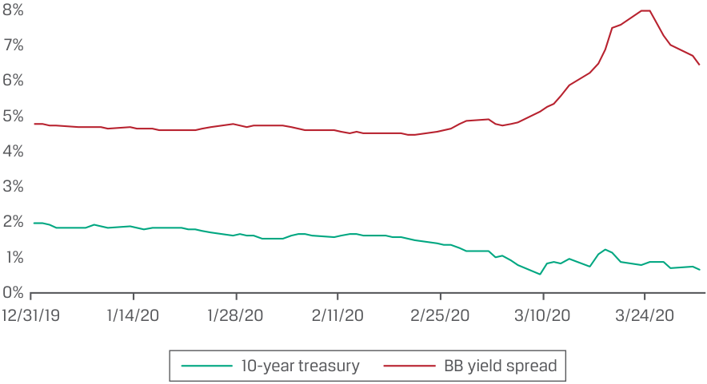
Chú thích hình ảnh: - Trục tung: Mức lãi suất / chênh lệch lợi suất từ 0% đến 8%. - Trục hoành: Thời gian từ 12/31/19 đến 3/24/20. - Các đường biểu diễn: Lợi suất trái phiếu Kho bạc kỳ hạn 10 năm (10-year treasury – giảm từ khoảng 2% xuống dưới 1% vào tháng 3/2020) và Chênh lệch lợi suất trái phiếu hạng BB (BB yield spread – tăng vọt từ khoảng 2% lên trên 7% vào tháng 3/2020).
During such periods, we might expect analytical and empirical duration estimates to differ. For a government bond with little or no credit risk, we would expect analytical and empirical duration to be similar because benchmark yield changes largely drive bond prices. Conversely, credit spreads (and liquidity spreads) would widen because of an increase in expected default risk. Since credit spreads and benchmark yields are negatively correlated under this scenario, wider credit spreads will partially or fully offset the decline in government benchmark yields, resulting in lower empirical duration estimates than analytical duration estimates (in other words, the expected increase in a bond’s price from declining government benchmark yields is offset by a decrease in price from widening credit spreads). Analysts must consider the correlation between benchmark yields and credit spreads when deciding whether to use empirical or analytical duration estimates.
Trong những giai đoạn như vậy, chúng ta có thể kỳ vọng các ước tính thời lượng giải tích và thực nghiệm sẽ khác nhau. Đối với một trái phiếu chính phủ có rất ít hoặc không có rủi ro tín dụng, chúng ta kỳ vọng thời lượng giải tích và thực nghiệm sẽ tương tự nhau bởi vì những thay đổi trong lợi suất chuẩn phần lớn chi phối giá trái phiếu. Ngược lại, chênh lệch tín dụng (và chênh lệch thanh khoản) sẽ nới rộng ra do sự gia tăng rủi ro vỡ nợ kỳ vọng. Vì chênh lệch tín dụng và lợi suất chuẩn có tương quan nghịch trong kịch bản này, chênh lệch tín dụng rộng hơn sẽ bù trừ một phần hoặc toàn bộ cho sự sụt giảm trong lợi suất chuẩn của chính phủ, dẫn đến ước tính thời lượng thực nghiệm thấp hơn ước tính thời lượng giải tích (nói cách khác, mức tăng kỳ vọng trong giá trái phiếu từ việc lợi suất chuẩn của chính phủ giảm xuống bị bù trừ bởi mức giảm giá từ việc chênh lệch tín dụng nới rộng ra). Các chuyên viên phân tích phải xem xét mối tương quan giữa lợi suất chuẩn và chênh lệch tín dụng khi quyết định có nên sử dụng các ước tính thời lượng thực nghiệm hay giải tích.
EXAMPLE 4
VÍ DỤ 4 (EXAMPLE 4)
Viswan Family Office’s Corporate Bond Portfolio— Empirical vs. Analytical Duration
Danh mục Đầu tư Trái phiếu Doanh nghiệp của Văn phòng Quản lý Gia sản Viswan — Thời lượng Thực nghiệm so với Giải tích (Viswan Family Office’s Corporate Bond Portfolio—Empirical vs. Analytical Duration)
In addition to equity holdings, the Viswan Family Office (VFO) manages a government bond portfolio and a corporate bond portfolio. Positions in the government bond portfolio are mainly medium-term US Treasury securities but also include debt of other highly rated developed-market sovereign issuers. About half of the corporate bond portfolio is invested in investment-grade issues, and the other half consists of high-yield issues, with a mix of maturities and a mix of North American, European, and Asian companies.
Ngoài việc nắm giữ cổ phiếu, Văn phòng Quản lý Gia sản Viswan (Viswan Family Office – VFO) còn quản lý một danh mục đầu tư trái phiếu chính phủ và một danh mục đầu tư trái phiếu doanh nghiệp. Các vị thế trong danh mục đầu tư trái phiếu chính phủ chủ yếu là chứng khoán Kho bạc Hoa Kỳ trung hạn nhưng cũng bao gồm nợ của các tổ chức phát hành chính phủ tại các thị trường phát triển được xếp hạng tín nhiệm cao khác. Khoảng một nửa danh mục đầu tư trái phiếu doanh nghiệp được đầu tư vào các đợt phát hành hạng đầu tư (investment-grade issues), và nửa còn lại bao gồm các đợt phát hành lợi suất cao (high-yield issues), với sự kết hợp của nhiều kỳ hạn và sự pha trộn giữa các công ty Bắc Mỹ, Châu Âu và Châu Á.
Explain why empirical duration is likely to be a more relevant interest rate risk measure for VFO’s corporate bond portfolio than for its government bond portfolio.
Hãy giải thích tại sao thời lượng thực nghiệm có nhiều khả năng là một thước đo rủi ro lãi suất phù hợp hơn đối với danh mục đầu tư trái phiếu doanh nghiệp của VFO so với danh mục đầu tư trái phiếu chính phủ của họ.
Solution:
Lời giải:
The government bond portfolio includes debt securities of the US government and other highly rated developed-market sovereign issuers. Since benchmark yields are the primary driver of changes in overall bond yields in this portfolio, the results of analytical duration and empirical duration should be broadly similar.
Danh mục đầu tư trái phiếu chính phủ bao gồm các chứng khoán nợ của chính phủ Hoa Kỳ và các tổ chức phát hành chính phủ tại các thị trường phát triển được xếp hạng cao khác. Vì lợi suất chuẩn là động lực chính tạo ra những thay đổi trong tổng lợi suất trái phiếu của danh mục đầu tư này, nên kết quả của thời lượng giải tích và thời lượng thực nghiệm sẽ nhìn chung tương tự nhau.
The corporate bond portfolio includes a wide variety of debt securities with varying levels of credit quality and liquidity risk and, therefore, different credit and liquidity spreads.
Danh mục đầu tư trái phiếu doanh nghiệp bao gồm nhiều loại chứng khoán nợ với các mức độ chất lượng tín dụng và rủi ro thanh khoản khác nhau và do đó có mức chênh lệch tín dụng và thanh khoản khác nhau.
Correlations between benchmark yield changes and the sizes of the credit and liquidity spreads are negative, particularly during stressed market conditions, such that during such times, lower benchmark yields are more than offset by higher credit and liquidity spreads. So, for the lower-quality corporate bonds, yields increase, which makes their empirical duration significantly lower than their analytical duration.
Mối tương quan giữa những thay đổi của lợi suất chuẩn và quy mô của chênh lệch tín dụng cùng thanh khoản là tương quan nghịch, đặc biệt là trong các điều kiện thị trường căng thẳng, sao cho trong những thời điểm đó, mức lợi suất chuẩn thấp hơn bị lấn át hoàn toàn bởi mức chênh lệch tín dụng và thanh khoản cao hơn. Vì vậy, đối với các trái phiếu doanh nghiệp có chất lượng thấp hơn, lợi suất tăng lên, khiến cho thời lượng thực nghiệm của chúng thấp hơn đáng kể so với thời lượng giải tích.
Consequently, empirical duration, not analytical duration, is the more accurate interest rate risk measure for the corporate bond portfolio.
Do đó, thời lượng thực nghiệm, chứ không phải thời lượng giải tích, là thước đo rủi ro lãi suất chính xác hơn đối với danh mục đầu tư trái phiếu doanh nghiệp.
QUESTION SET
BỘ CÂU HỎI (QUESTION SET)
- When comparing analytical duration and empirical duration, which of the following statements is correct?
- A. Empirical duration and convexity are estimated duration and convexity statistics using mathematical formulas.
- Khi so sánh thời lượng giải tích và thời lượng thực nghiệm, phát biểu nào sau đây là đúng?
- A. Thời lượng và độ lồi thực nghiệm là các số liệu thống kê thời lượng và độ lồi được ước tính bằng cách sử dụng các công thức toán học.
-
B. Analytical duration and convexity are estimated using historical data in non-statistical models that incorporate various factors affecting bond prices.
-
C. Neither A nor B
-
B. Thời lượng và độ lồi giải tích được ước tính bằng cách sử dụng dữ liệu lịch sử trong các mô hình phi thống kê kết hợp nhiều yếu tố khác nhau ảnh hưởng đến giá trái phiếu.
-
C. Không phải A cũng không phải B
Solution:
Lời giải:
C is correct.
C là đáp án đúng.
A is incorrect because it is analytical , not empirical, duration and convexity that are measured using mathematical formulas.
A không đúng vì thời lượng và độ lồi giải tích, chứ không phải thực nghiệm, mới được đo lường bằng cách sử dụng các công thức toán học.
B is incorrect because it is empirical , not analytical, duration and convexity that are estimated using historical data in non-statistical models that incorporate various factors affecting bond prices.
B không đúng vì thời lượng và độ lồi thực nghiệm, chứ không phải giải tích, mới được ước tính bằng cách sử dụng dữ liệu lịch sử trong các mô hình thống kê kết hợp nhiều yếu tố khác nhau ảnh hưởng đến giá trái phiếu.
- True or false: Empirical duration estimates provide better estimates than the analytical duration estimates for bonds that have credit risk.
- Đúng hay sai: Các ước tính thời lượng thực nghiệm cung cấp ước tính tốt hơn so với các ước tính thời lượng giải tích đối với những trái phiếu có rủi ro tín dụng.
Solution:
Lời giải:
True. Macroeconomic factors drive government bond yields lower in a market stress scenario, and the flight to safety will cause high-yield bond credit spreads to widen because of an increase in expected default risk. Since credit spreads and benchmark yields are negatively correlated under this scenario, wider credit spreads will partially or fully offset the decline in government benchmark yields. Analytical duration, however, assumes that benchmark yields and spreads are uncorrelated. Empirical duration estimates are a more accurate method of forecasting for bonds with credit risk.
Đúng (True). Các yếu tố kinh tế vĩ mô đẩy lợi suất trái phiếu chính phủ xuống thấp hơn trong một kịch bản thị trường căng thẳng, và xu hướng tìm nơi trú ẩn an toàn (flight to safety) sẽ khiến chênh lệch tín dụng của trái phiếu lợi suất cao nới rộng ra do sự gia tăng rủi ro vỡ nợ kỳ vọng. Vì chênh lệch tín dụng và lợi suất chuẩn có tương quan nghịch trong kịch bản này, chênh lệch tín dụng rộng hơn sẽ bù trừ một phần hoặc toàn bộ cho sự sụt giảm trong lợi suất chuẩn của chính phủ. Tuy nhiên, thời lượng giải tích lại giả định rằng lợi suất chuẩn và chênh lệch lợi suất không tương quan với nhau. Các ước tính thời lượng thực nghiệm là phương pháp dự báo chính xác hơn đối với các trái phiếu có rủi ro tín dụng.
- Identify some of the challenges that may be encountered in estimating empirical duration.
- Xác định một số thách thức có thể gặp phải khi ước tính thời lượng thực nghiệm.
Solution:
Lời giải:
Empirical duration estimation utilizes historical data based on multiple factors. What factors to use and not use, what weight to give the factors, and how to weight current data versus older data (e.g., the time period to measure duration) are some challenges.
Việc ước tính thời lượng thực nghiệm sử dụng dữ liệu lịch sử dựa trên nhiều yếu tố. Việc sử dụng và không sử dụng những yếu tố nào, gán trọng số nào cho các yếu tố đó, và cách tính trọng số cho dữ liệu hiện tại so với dữ liệu cũ hơn (ví dụ: khoảng thời gian để đo lường thời lượng) là một số thách thức.
~~PRACTICE PROBLEMS~~
BÀI TẬP THỰC HÀNH (PRACTICE PROBLEMS)
The following information relates to questions 1-8
Thông tin sau đây liên quan đến các câu hỏi 1–8
An investor’s well-diversified portfolio has $200,000 in cash. The investor aims to invest in short-term, one-year Large-Cap Company bonds, prior to using the cash to invest in an upcoming IPO. There are currently two Large-Cap Company bonds on the market to purchase, both with one-year maturities. One of the bonds, Bond A, is a non-callable bond, while Bond B is a callable bond. As a fixed-income analyst, you are asked to conduct an analysis.
Danh mục đầu tư được đa dạng hóa tốt của một nhà đầu tư có $\$200,000$ tiền mặt. Nhà đầu tư dự định đầu tư vào trái phiếu ngắn hạn, kỳ hạn 1 năm của Công ty Vốn hóa Lớn (Large-Cap Company), trước khi sử dụng số tiền mặt này để đầu tư vào một đợt IPO sắp tới. Hiện có hai trái phiếu của Công ty Vốn hóa Lớn trên thị trường để mua, cả hai đều có kỳ hạn 1 năm. Một trong hai trái phiếu, Trái phiếu A, là trái phiếu không thể mua lại (non-callable bond), trong khi Trái phiếu B là trái phiếu có thể mua lại (callable bond). Là một chuyên viên phân tích thu nhập cố định, bạn được yêu cầu thực hiện một phân tích.
1. For the two bonds offered by Large-Cap Company, which duration calculation would be the most appropriate to use to measure interest rate risk?
1. Đối với hai trái phiếu được chào bán bởi Công ty Vốn hóa Lớn, phép tính thời lượng nào sẽ thích hợp nhất để sử dụng nhằm đo lường rủi ro lãi suất?
-
A. Modified duration
-
B. Macaulay duration
-
C. Effective duration
-
A. Thời lượng điều chỉnh (Modified duration)
-
B. Thời lượng Macaulay (Macaulay duration)
-
C. Thời lượng hiệu dụng (Effective duration)
2. For Bond B, as the benchmark yield curve declines, the slope of the line tangent to the bond flattens as the benchmark yield declines and reaches an inflection point, after which the effective convexity becomes:
2. Đối với Trái phiếu B, khi đường cong lợi suất chuẩn giảm xuống, độ dốc của đường tiếp tuyến với trái phiếu trở nên phẳng hơn khi lợi suất chuẩn giảm và đạt đến một điểm uốn, sau điểm đó độ lồi hiệu dụng trở thành:
-
A. positive.
-
B. negative.
-
C. neither positive nor negative.
-
A. dương (positive).
-
B. âm (negative).
-
C. không dương cũng không âm.
3. The following information on Bonds A and B was obtained:
3. Thông tin sau đây về Trái phiếu A và B đã được thu thập:
| Effective | Effective | |
|---|---|---|
| Bond | f Duration |
f Convexity |
| A | 7.48621 | 29.35972 |
| B | 7.23852 | –321.75618 |
| Trái phiếu (Bond) | Thời lượng Hiệu dụng (Effective Duration) | Độ lồi Hiệu dụng (Effective Convexity) |
|---|---|---|
| A | 7.48621 | 29.35972 |
| B | 7.23852 | –321.75618 |
Compare the interest rate risk of Bond A and Bond B.
Hãy so sánh rủi ro lãi suất của Trái phiếu A và Trái phiếu B.
-
A. Bond A is riskier than Bond B.
-
B. Bond B is riskier than Bond A.
-
C. Bond A and Bond B have approximately the same interest rate risk.
-
A. Trái phiếu A rủi ro hơn Trái phiếu B.
-
B. Trái phiếu B rủi ro hơn Trái phiếu A.
-
C. Trái phiếu A và Trái phiếu B có rủi ro lãi suất xấp xỉ như nhau.
4. For the percentage price change for Bond A, given a 200 bp increase in benchmark yield, what part of the price change is of the most concern?
4. Đối với phần trăm thay đổi giá của Trái phiếu A, khi lợi suất chuẩn tăng 200 bp, phần nào của sự thay đổi giá là đáng quan tâm nhất?
-
A. Duration
-
B. Convexity
-
C. Not able to determine with given information
-
A. Thời lượng (Duration)
-
B. Độ lồi (Convexity)
-
C. Không thể xác định với thông tin đã cho
5. A colleague asks whether you also considered looking at the key rate durations when comparing the interest rate risks of Bond A and Bond B. Would research into key rate durations for Bond A and Bond B help you make a better decision about the interest rate risk of the two bonds?
5. Một đồng nghiệp hỏi liệu bạn có cân nhắc việc xem xét các thời lượng lãi suất chủ chốt khi so sánh rủi ro lãi suất của Trái phiếu A và Trái phiếu B hay không. Việc nghiên cứu các thời lượng lãi suất chủ chốt cho Trái phiếu A và Trái phiếu B có giúp bạn đưa ra quyết định tốt hơn về rủi ro lãi suất của hai trái phiếu không?
-
A. Yes
-
B. No
-
C. Inconclusive
-
A. Có (Yes)
-
B. Không (No)
-
C. Chưa thể kết luận (Inconclusive)
6. The investor’s portfolio is diversified, and the fixed-income component of the portfolio has bonds of various maturities, with a duration of 7.48621. What would happen to the effective duration of the fixed-income component of the investor’s portfolio if Bond A is added to the portfolio?
6. Danh mục đầu tư của nhà đầu tư đã được đa dạng hóa, và hợp phần thu nhập cố định của danh mục đầu tư có các trái phiếu với nhiều kỳ hạn khác nhau, có thời lượng là 7.48621. Điều gì sẽ xảy ra với thời lượng hiệu dụng của hợp phần thu nhập cố định trong danh mục đầu tư của nhà đầu tư nếu Trái phiếu A được bổ sung vào danh mục đầu tư?
-
A. It would increase.
-
B. If would decrease.
-
C. It would stay the same.
-
A. Nó sẽ tăng lên.
-
B. Nó sẽ giảm xuống.
-
C. Nó sẽ giữ nguyên không đổi.
7. For the two bonds under consideration, would analytical duration estimates or empirical duration estimates be most appropriate in conducting your analysis?
7. Đối với hai trái phiếu đang được xem xét, các ước tính thời lượng giải tích hay các ước tính thời lượng thực nghiệm sẽ thích hợp nhất khi thực hiện phân tích của bạn?
-
A. Analytical duration estimates
-
B. Empirical duration estimates
-
C. Either type of estimate would be appropriate.
-
A. Các ước tính thời lượng giải tích (Analytical duration estimates)
-
B. Các ước tính thời lượng thực nghiệm (Empirical duration estimates)
-
C. Bất kỳ loại ước tính nào trong hai loại đều thích hợp.
8. What impact would a “flight to safety” (i.e., government bond yields falling and credit spreads widening) have on the analytical duration estimate of Bond A?
8. Hiện tượng “tìm nơi trú ẩn an toàn” (flight to safety – tức là lợi suất trái phiếu chính phủ giảm và chênh lệch tín dụng nới rộng ra) sẽ có tác động gì lên ước tính thời lượng giải tích của Trái phiếu A?
-
A. Decreased duration
-
B. Increased duration
-
C. No impact
-
A. Làm giảm thời lượng
-
B. Làm tăng thời lượng
-
C. Không có tác động
~~SOLUTIONS~~
LỜI GIẢI (SOLUTIONS)
-
C is correct. Since Bond B is callable, it has an embedded option, and effective duration is the most appropriate duration measure. Effective duration also works on bonds without embedded options and would allow the analyst to compare the interest rate risk of the two bonds.
-
B is correct. Since the bond is callable, after a certain point on the yield curve, the issuer will exercise the call and the owner will not be able to realize additional gains from declines in the benchmark yield curve.
-
B is correct. Bond B is riskier since the 100 bps upward shift in the yield curve results in a greater percentage price decrease, owing to its negative effective convexity:
- %∆ PVFull Bond A ≈ (–7.48621 × 0.0200) + [½ × 29.35972 × (–0.0200)2 ] = –7.33941%.
%∆ PVFull Bond B ≈ (–7.23853 × 0.0200) + [½ × –321.75618 × (0.0200)2 ] = –8.84730%.
-
C là đáp án đúng. Vì Trái phiếu B có thể mua lại, nó có một quyền chọn đi kèm, và thời lượng hiệu dụng là thước đo thời lượng thích hợp nhất. Thời lượng hiệu dụng cũng áp dụng được cho các trái phiếu không có quyền chọn đi kèm và sẽ cho phép chuyên viên phân tích so sánh rủi ro lãi suất của hai trái phiếu.
-
B là đáp án đúng. Vì trái phiếu có thể mua lại, sau một điểm nhất định trên đường cong lợi suất, tổ chức phát hành sẽ thực hiện quyền chọn mua lại và người sở hữu sẽ không thể hiện thực hóa thêm các khoản lãi từ sự sụt giảm trong đường cong lợi suất chuẩn.
-
B là đáp án đúng. Trái phiếu B rủi ro hơn vì sự dịch chuyển đi lên 100 bps (hoặc 200 bps) trong đường cong lợi suất dẫn đến mức sụt giảm phần trăm giá lớn hơn, do độ lồi hiệu dụng âm của nó:
-
$\%\Delta PV^{\text{Full}} \text{ Trái phiếu A} \approx (-7.48621 \times 0.0100) + \left[ \frac{1}{2} \times 29.35972 \times (0.0100)^2 \right] = -7.33941\%$ (Lưu ý: Bản gốc viết
0.0200trong công thức nhưng kết quả-7.33941%và-8.84730%được tính với mức dịch chuyển 100 bps =0.0100). -
$\%\Delta PV^{\text{Full}} \text{ Trái phiếu B} \approx (-7.23853 \times 0.0100) + \left[ \frac{1}{2} \times -321.75618 \times (0.0100)^2 \right] = -8.84730\%$.
- A là đáp án đúng. Thông thường, tác động của thời lượng lớn hơn rất nhiều so với tác động của độ lồi.
- A is correct. Typically, the effect of duration is much larger than the effect of convexity.
%∆ PVFull Bond A, Duration ≈ –7.48621 × 0.0200 = –14.97242%.
%∆ PVFull Bond A, Convexity Adjustment ≈ ½ × 29.35972 × (–0.0200)2 = –0.58719%.
-
B is correct. Since both bonds mature in one year, key rate duration analysis would not give you any additional insight, since both bonds would undergo the same shift in the curve.
-
C is correct. Bond A has the same effective duration as the portfolio effective duration.
-
B is correct. Since both Bond A and Bond B are corporate bonds, they have credit risk, and as such, empirical duration would be the most appropriate because benchmark yields and credit spreads may not be positively correlated.
-
C is correct. There would be no impact on the analytical duration estimate. However, an empirical duration estimate would be impacted. A flight to safety would result in an increase in the bond price due to the falling benchmark yield being offset by widening credit spread. This would lead to a lower empirical duration than analytical duration.
-
B là đáp án đúng. Vì cả hai trái phiếu đều đáo hạn sau một năm, phân tích thời lượng lãi suất chủ chốt sẽ không cung cấp thêm cho bạn bất kỳ thông tin chi tiết nào, vì cả hai trái phiếu sẽ chịu cùng một mức dịch chuyển trên đường cong.
-
C là đáp án đúng. Trái phiếu A có cùng thời lượng hiệu dụng với thời lượng hiệu dụng của danh mục đầu tư.
-
B là đáp án đúng. Vì cả Trái phiếu A và Trái phiếu B đều là trái phiếu doanh nghiệp, chúng có rủi ro tín dụng, và do đó, thời lượng thực nghiệm sẽ là thích hợp nhất bởi vì lợi suất chuẩn và chênh lệch tín dụng có thể không có tương quan thuận.
-
C là đáp án đúng. Sẽ không có tác động nào lên ước tính thời lượng giải tích. Tuy nhiên, ước tính thời lượng thực nghiệm sẽ bị ảnh hưởng. Xu hướng tìm nơi trú ẩn an toàn sẽ dẫn đến việc mức tăng giá trái phiếu do lợi suất chuẩn giảm bị bù trừ bởi mức chênh lệch tín dụng nới rộng ra. Điều này sẽ dẫn đến thời lượng thực nghiệm thấp hơn thời lượng giải tích.